¿Alguna vez has visitado un sitio web que te ha
hecho pensar... "Oye, este sitio web es realmente
genial e interactivo"? Pues bien, JavaScript
probablemente estaba haciendo que ocurriera.
En este curso, aprenderás a programar
con JavaScript, uno de los lenguajes de
programación más populares que hace que los
sitios web sean dinámicos e interactivos.
También puedes utilizar JavaScript
para crear aplicaciones y juegos para
móviles, procesar datos y mucho
más.
La consola
JavaScript es un lenguaje de programación que
se ejecuta en los navegadores web. La mayoría
de los sitios web utilizan JavaScript y cuando las
cosas van mal, los desarrolladores web utilizan
la consola para investigar los errores.
En esta lección aprenderás sobre la principal
arma del desarrollador web: la consola.
Los errores de programación no
son visibles en el navegador. Los
desarrolladores web utilizan la
consola para probar el código y
corregir errores.
Mensajes log
La consola forma parte del navegador web.
Escribir (o log) mensajes en la consola es una
buena manera de diagnosticar y solucionar
problemas menores en tu código.
Puedes usar console.log() para escribir
mensajes (o hacer log) . En el código de ejemplo
siguiente, el mensaje "All good, no errors" se
envía a la consola.
console.log('All good, no errors')
Puedes hacer log en mensajes para
informar sobre lo que estás haciendo
el código o alertar de que hay un
problema.
Mensajes de texto
El texto en JavaScript debe estar encerrado entre
comillas.
console.log('Testing in progress')
Tu código JavaScript no funcionará
si no incluye un par de comillas en
torno al mensaje de texto. Puedes
utilizar comillas simples o dobles.
El Code Playground
¿Listo para escribir y ejecutar código real? EI
Code Playground te permitirá hacerlo en este
curso.
Pulsa sobre el bloque de código para abrir el
Code Playground, luego presiona "run" para
ver el mensaje en Ia consola. La consola con
el mensaje se abrirá en Ia parte inferior de Ia
página.
console.log('My first console message')
¿Puedes cambiar el código JavasScript para
enviar un mensaje diferente a la consola?
El Code Playground tiene secciones
para las 3 tecnologías web
principales.
HTML controla la estructura de una
página web.
CSS controla Ia presentación y el
estilo de una página web.
En esta lección sólo utilizarás la
sección de JavaScript.
Lecciones aprendidas
iEres fantástico! En esta lección, has aprendido
que:
JavaScript es un lenguaje de programación
muy popular.
Los desarrolladores web utilizan Ia consola
para probar el código y corregir errores.
Puedes utilizar console.log() para escribir o
registrar mensajes en la consola.
En las próximas lecciones, aprenderás a utilizar
JavaScript para crear páginas web interactivas.
Producción
Salida
Usemos JavaScript para imprimir "Hello World"
en el navegador.
El método document.write() debe
utilizarse sólo para las pruebas.
Otros mecanismos de salida
aparecen en las próximas lecciones.
Salida a la consola
Mientras que document.write() se utiliza para escribir Ia salida HTML, Ia función console.log() se utiliza para realizar la salida a la consola del navegador.
La consola es parte del navegador web y te permite registrar mensajes, ejecutar código JavaScript y ver errores y advertencias.
Por ejemplo:
console.log("Hello from console!")
Los desarrolladores mayormente usan la consola para probar tu código JavaScript.
Code Coach
Tu primer programa
Variables
Variables
Las variables son contenedores para registrar datos. El valor de una variable puede cambiar a lo largo del programa.
Utilice la palabra clave var para declarar una variable:
var x = 10;
En el ejemplo anterior, a la variable x le es asignado el valor 10.
En JavaScript, el signo igual (=) se llama el operador "asignación", en lugar de un operador "igual a".
Por ejemplo, x = y asignará el valor de y a x.
JavaScript es sensible a mayúsculas. Por ejemplo, las variables lastName y lastname, son dos variables diferentes.
Usando Variables
Asignemos un valor a una variable y démosle
salida al navegador.
var x = 100;
document.write(x);
El uso de variables es útil de muchas maneras.
Puedes tener mil líneas de código que pueden
incluir la variable x. Puedes cambiar el valor de
las variables y usarlas varias veces en tu código:
var x = 100;
console.log(x);
x = 42;
console.log(x);
Cada "instrucción" escrita se llama
declaración. Las declaraciones en
JavaScript están separadas por
punto y coma.
Nombrando variables
Los nombres de variables en JavaScript son
sensibles a las mayúsculas y minúsculas.
En el ejemplo de abajo cambiamos x a
mayúsculas:
var x = 100;
document.write(X);
Este código no dará lugar a ninguna salida, ya
que x y X son dos variables diferentes.
Reglas de nombres:
El primer carácter debe ser una letra, un guión
bajo (_), o un signo de dólar ($). Los caracteres
subsiguientes pueden ser letras, dígitos,
subrayados o signos de dólar.
Los números no están permitidos como el
primer carácter.
Los nombres de variables no pueden incluir un
operador matemático o lógico en el nombre. Por
ejemplo, 2*a/go o esto+eso;
Los nombres en JavaScript no deben contener
espacios.
No debes usar ningún símbolo especial, como
my#num, num%, etc.
Los guiones no están permitidos en
JavaScript. Están reservados para las
sustracciones.
Comentarios
Comentarios en
JavaScript
No todas las declaraciones de JavaScript son
"ejecutadas".
El código después de una doble barra //, o entre /
* y */ se trata como un comentario.
Los comentarios se ignoran y no se ejecutan.
Los comentarios en una línea única usan barras dobles.
//Este es un comentario de una sola línea
alert("This is an alert box!");
Resultado:
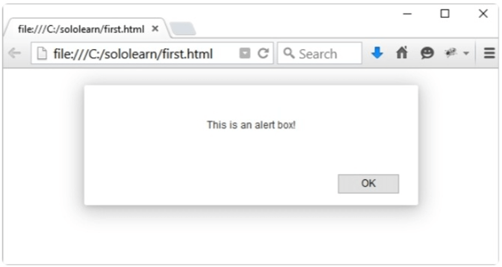
Es una buena idea hacer un comentario sobre
la lógica de las grandes funciones para que tu
código sea más legible para los demás.
alert() se utiliza para crear un buzón
de mensajes.
Code Coach
Comentarios
Comentarios de líneas
multiples
Todo lo que escribes entre /* y */ será
considerado como un comentario de líneas
múltiples.
Aqui hay un ejemplo:
/*Este código
crea una
caja de alerta
('alert box')*/
alert("Esto es una caja de alerta ('alert box')");
Los comentarios se usan para
describir y explicar lo que el codigo
está haciendo.
Tipos de datos
Tipos de datos
El termino tipo de dato se refiere a los tipos de
valores con los que un programa puede trabajar.
Las variables de JavaScript pueden contener
muchos tipos de datos, como números, cadenas,
matrices, y otros...
Los números en JavaScript pueden ser escritos
con o sin decimales.
var num = 42; // Un número sin decimales
var price = 55.55; // Un número con decimales
document.write(price);
Esta variable puede cambiarse
fácilmente a otro tipo de dato asignándole
cualquier otro valor de un tipo de datos distinto,
como num = 'alguna cadena al azar’.
Cadenas de texto
Las cadenas de texto en JavaScript son
utilizadas para guardar y manipular texto.
Una cadena de texto puede ser cualquier texto
que aparezca entre comillas. Puedes usar
comillas simples o dobles.
var name = 'John';
var text = "My name is John Smith";
Puedes utilizar comillas dentro de una cadena de
texto, siempre y cuando no sean del mismo tipo
que las comillas que rodean la cadena de texto.
var text = "My name is 'John'";
Puedes introducir comillas dobles entre comillas dobles y comillas simples entre comillas simples
utilizando el caracter escape (\) así: \" y así \' respectivamente.
Cadenas de texto
Como las cadenas de texto deben ser escritas entre comillas, hay que considerar cómo manejar las comillas dentro de una cadena de texto. El carácter de escape barra inversa (\) convierte a los caracteres especiales en caracteres de texto.
var sayHello = 'Hello world! \'I am a JavaScript programmer.\' ';
document.write(sayHello);
Resultado:
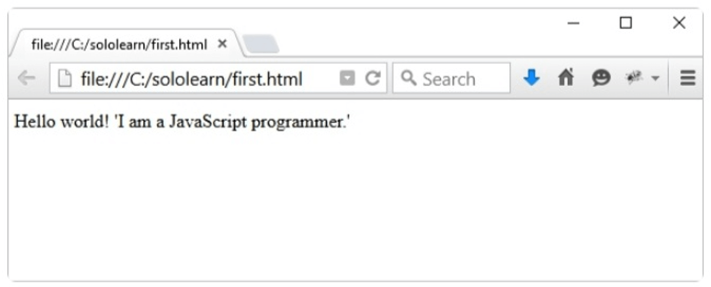
El carácter de escape (\) puede también ser usado para insertar otros caracteres especiales dentro de una cadena de texto.
Los siguientes caracteres especiales pueden ser añadidos a una cadena de texto usando el signo de barra inversa:
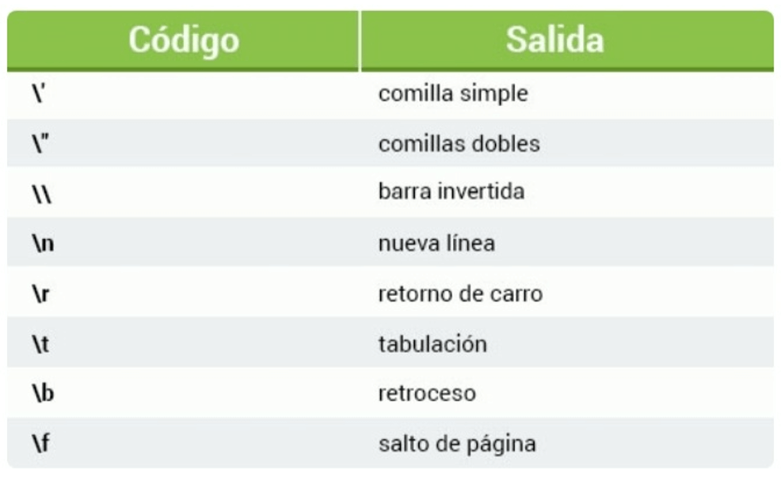
Si comienzas una cadena de texto con una comilla simple, debes terminarla también con una comilla simple. La misma regla aplica para comillas dobles. De lo contrario, JavaScript se confundiría.
Code Coach
Escapando caracteres en cadenas
Booleanos
En JavaScript, un Booleano (tipo de dato lógico) es aquel donde sólo puedes tener dos valores: true (verdadero) o false (falso).
Estos son útiles cuando necesitas un tipo de dato que sólo pueda tener uno de dos valores, tales como Sí/No, Encendido/Apagado, Verdadero/Falso.
Ejemplo:
var isActive = true;
var isHoliday = false;
El valor Booleano de 0 (cero), null (nulo), undefined (indefinido), cadena de texto vacía es falso.
Todo lo que tenga un valor "real" es verdadero.
Examen Módulo 1
Módulo 2: Conceptos básicos
Operadores matematicos
Operadores aritméticos
Los operadores aritméticos realizan funciones aritméticas en números (literales o variables).
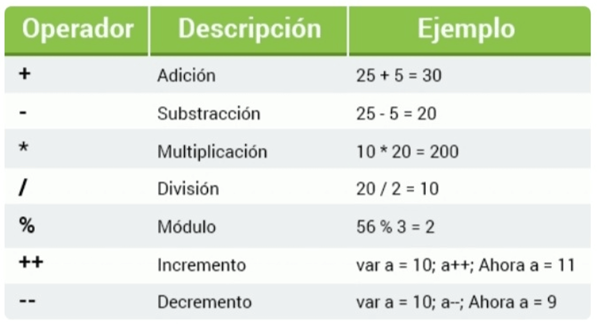
En el siguiente ejemplo, el operador de adición es usado para determinar la suma de dos números.
var x = 10 + 5;
document.write(x);
Puedes añadir tantos números o variables juntas como quieras o sea necesario.
var x = 10;
var y = x + 5 + 22 + 45 + 6548;
document.write(y);
Puedes obtener el resultado de la expresión de un string utilizando la función eval(), la cual toma el argumento de una expresión de un string como eval("10 * 20 + 8") y devuelve el resultado. Si el argumento está vacío, la función devuelve undefined.
Multiplicación
El operador de multiplicación (*) multiplica un número por otro.
var x = 10 * 5;
document.write(x);
10 * '5' o '10' * '5' da el mismo resultado. Multiplicar un número con valores de string como 'sololearn' * 5 devuelve NaN (Not a Number - no es un número).
Code Coach
Operadores matemáticos
División
El operador / es utilizado para realizar operaciones de división:
var x = 100 / 5;
document.write(x);
Recuerda gestionar los casos donde pueda haber una división entre 0.
El módulo
El operador módulo (%) retorna el resto de la división (lo que sobra).
var myVariable = 26 % 6;
En JavaScript, el operador módulo es utilizado no sólo en enteros, sino también en números de punto flotante.
Incremento y decrementos
Incremento ++
El operador de incremento, aumenta el valor numérico de su operando en uno. Si se coloca antes del operando, retorna el valor incrementado. Si se coloca después del operando, retorna el valor original y luego incrementa el operando.
Decremento --
El operador de decremento, disminuye el valor numérico de su operando en uno. Si se coloca antes del operando, retorna el valor decrementado. Si se coloca después del operando, retorna el valor original y luego decrementa el operando.
Algunos ejemplos:
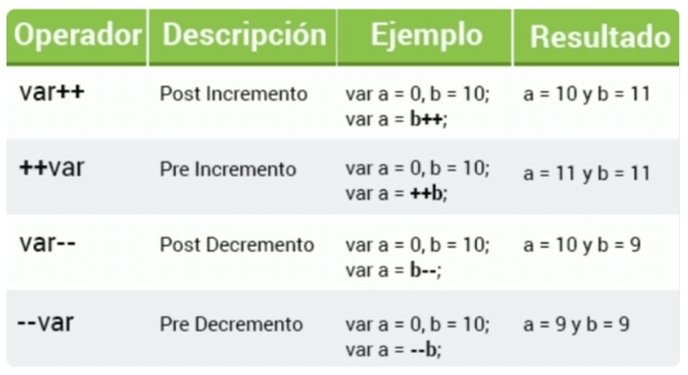
Al igual que en matemáticas de escuela, puedes cambiar el orden de las operaciones aritméticas usando paréntesis. Ejemplo: var x = (100 + 50) * 3;
Operadores de asignación
Operadores de asignación
Los operadores de asignación asignan valores a variables de JavaScript.
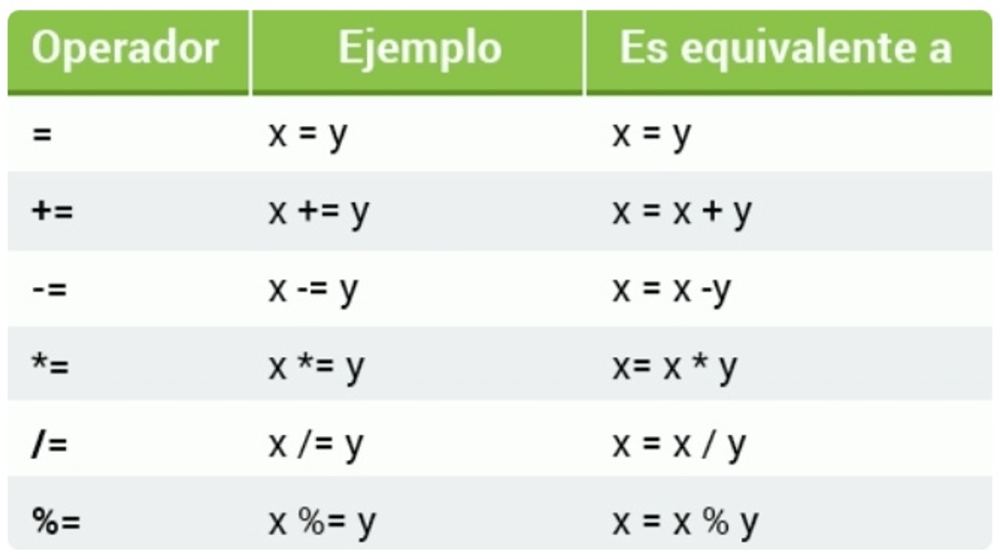
Puedes utilizar múltiples operadores de asignación en una línea, como x - = y + = 9.
Operadores de comparación
Operadores de comparación
Los operadores de comparación son utilizados en declaraciones lógicas para determinar la igualdad o diferencia entre variables o valores. Estos retornan verdadero o falso.
El operador igual que (==) valida si los valores de los operandos son iguales.
var num = 18;
// num == 8 retornará false (falso)
Puedes comprobar todo tipo de datos; los operadores de comparación siempre devuelven true o false (verdadero o falso).
Operadores de comparación
La siguiente tabla explica los operadores de comparación.
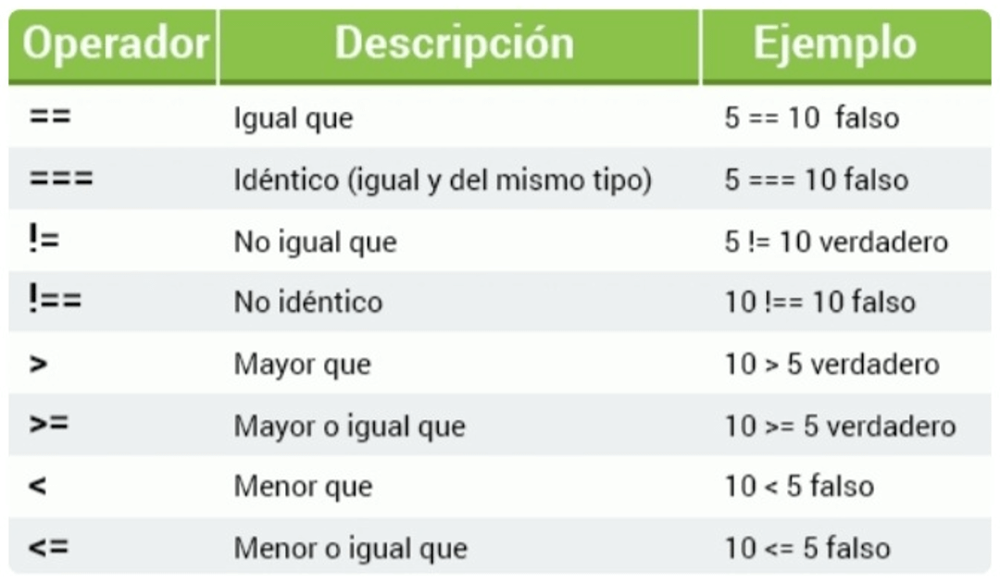
Cuando uses operadores, asegúrate de que los argumentos sean del mismo tipo de datos; los números deberían ser comparados con números, las cadenas de texto, con cadenas de texto, y así sucesivamente.
Code Coach
Operadores de comparación 2
Operadores lógicos o booleanos
Operadores lógicos
Operadores lógicos, también conocidos como operadores booleanos, evalúan la expresión y retornan verdadero o falso.
La tabla a continuación explica los operadores lógicos (Y, O, NO).
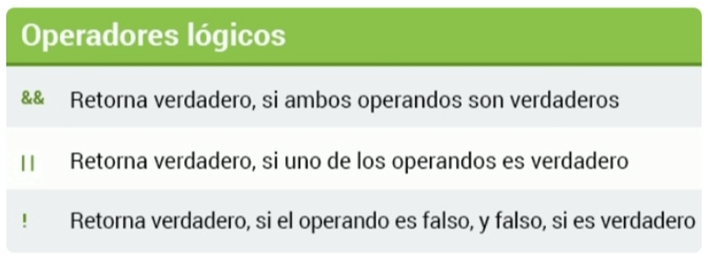
Puedes comprobar todo tipo de datos; los operadores de comparación siempre devuelven true o false (verdadero o falso).
Operadores lógicos
En el siguiente ejemplo, hemos conectado dos expresiones booleanas con el operador Y.
(4 > 2) && (10 < 15)
Para que esta expresión sea verdadera, ambas condiciones deben ser verdaderas.
La primera condición determina si 4 es mayor que 2, lo cual es verdadero.
La segunda condición determina si 10 es menor que 15, lo cual también es verdadero.
Basados en estos resultados, la expresión completa es evaluada como verdadera.
Operador condicional (ternario)
Hay otro operador condicional en JavaScript que asigna un valor a una variable, basado en una condición.
Si la variable edad tiene un valor por debajo de 18, el valor de la variable esAdulto será "Demasiado joven". De lo contrario, el valor de esAdulto será "Lo suficientemente mayor".
Code Coach
Operadores lógicos o booleanos
Los operadores lógicos permiten conectar tantas expresiones como desees.
Operadores de cadenas de texto
Operadores de cadenas de texto
El operador para cadenas de texto más útil es concatenación, representado por el signo +. Concatenación puede ser usado para construir cadenas de texto juntando múltiples cadenas de texto, o juntando cadenas de texto con otros tipos:
var mystring1 = "I am learning";
var mystring2 = "JavaScript with Sololearn.";
document.write(mystring1 + mystring2);
El ejemplo anterior declara e inicializa dos variables de cadena de texto, y luego las concatena.
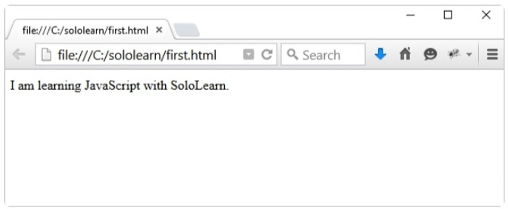
Los números entre comillas son tratados como cadenas de texto: "42" no es el número 42, es una cadena de texto que incluye dos caracteres, 4 y 2.
Examen Módulo 2
Proyecto de codificación: Planeador de viajes
Módulo 3: Bucles y condicionales
La declaración if
La declaración if
Muy a menudo cuando escribes código, deseas ejecutar diferentes acciones basados en diferentes condiciones.
Puedes realizar esto utilizando declaraciones condicionales en tu código.
Utiliza if para especificar un bloque de código que será ejecutado si una condición específica es verdadera.
if (condition ) {
statements
}
Las declaraciones serán ejecutadas sólo si la condición específica es verdadera.
Ejemplo:
var myNum1 = 7;
var myNum2 = 70;
if (myNum1 < myNum2) {
alert("JavaScript is easy to learn.");
}
Resultado:
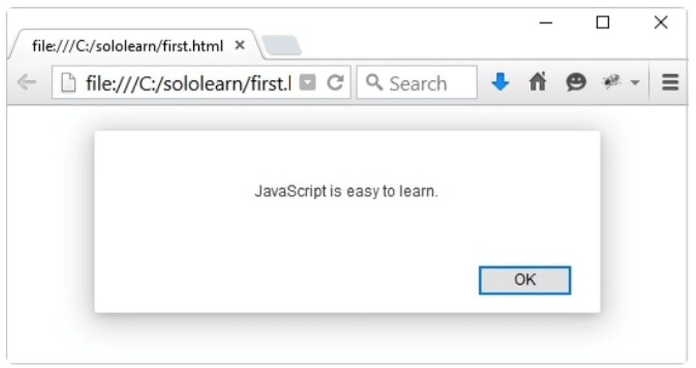
Tal y como se ve en el dibujo anterior, el método alert() en JavaScript es utilizado para generar una ventana de alerta emergente que contiene la información contenida entre los paréntesis.
La declaración if
Este es otro ejemplo de una declaración condicional falsa.
var myNum1 = 7;
var myNum2 = 10;
if (myNum1 > myNum2) {
alert("JavaScript is easy to learn.");
}
Como la condición evalúa a falso, la declaración de alerta es omitida y el programa continúa con la línea después de la llave de cierre de la declaración if.
Nota que if está en letras minúsculas. Utilizar letras mayúsculas (lf o IF) generará un error.
Code Coach
La declaración if
La declaración else
Utiliza la declaración else para especificar un bloque de código que será ejecutado si la condición es falsa.
if (expresión) {
// código ejecutado si la condición es verdadera
}
else {
// código ejecutado si la condición es falsa
}
Puedes evitar las llaves {} si tu código bajo la condición sólo contiene un comando.
La declaración else
El siguiente ejemplo demuestra el uso de una declaración lf... else.
var myNum1 = 7;
var myNum2 = 10;
if (myNum1 > myNum2) {
alert("This is my first condition");
} else {
alert("This is my second condition");
}
El ejemplo anterior dice:
- Si myNum 1 es mayor que myNum2, alerta "This is my first condition";
- Si no, alerta "This is my second condition".
El navegador imprimirá la segunda condición, ya que 7 no es mayor que 10.
También existe otra forma de hacerlo utilizando el operador ?: a > b ? alert(a): alert(b).
Code Coach
La declaración if else
La declaración else if
else if
Puedes utilizar la declaración else if para especificar una nueva condición si la primera condición es falsa.
Ejemplo:
var course = 1;
if (course == 1) {
document.write("<h1>HTML Tutorial</h1>");
} else if (course == 2) {
document.write("<h1>CSS Tutorial</h1>");
} else {
document.write("<h1>JavaScript Tutorial</h1>");
}
El código anterior dice:
- SI course es igual que 1, despliega "Tutorial HTML";
- Si no, si course es igual que 2, despliega "Tutorial CSS";
- Si ninguna de las anteriores es verdadera, entonces despliega "Tutorial JavaScript";
course es igual que 1, así que obtenemos el siguiente resultado:
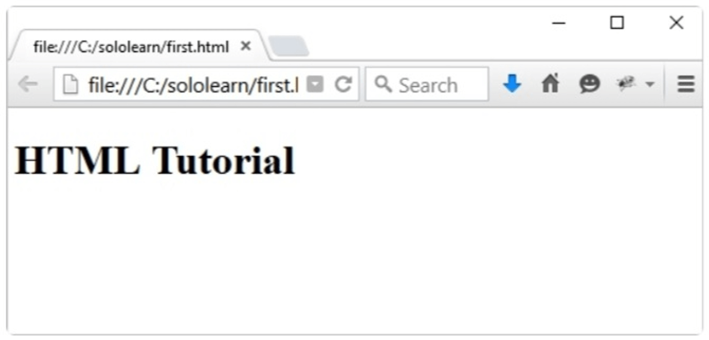
La declaración else final "finaliza" la declaración else if y debería ser escrita siempre después de las declaraciones lf y else lf.
Code Coach
else if
else if
El bloque final else será ejecutado cuando ninguna de las condiciones sean verdadera.
Vamos a cambiar el valor de la variable course de nuestro ejemplo previo.
var course = 3;
if (course == 1) {
document.write("<h1>HTML Tutorial</h1>");
} else if (course == 2) {
document.write("<h1>CSS Tutorial</h1>");
} else {
document.write("<h1>JavaScript Tutorial</h1>");
}
El resultado
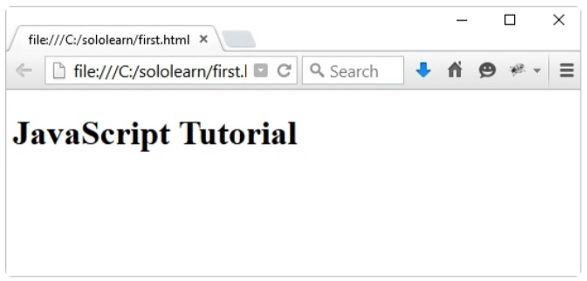
Puedes escribir tantas declaraciones else if como necesites.
La declaración switch
Switch
En los casos donde necesitas evaluar múltiples condiciones, utilizar declaraciones if else para cada condición podría no ser la mejor solución.
La declaración switch es utilizada para ejecutar diferentes acciones basadas en diferentes condiciones. Sintaxis:
switch (expresión) {
case n1:
declaraciones
break;
case n2:
declaraciones
break;
default:
declaraciones
}
La expresión switch es evaluada una vez. El valor de la expresión es comparado con los valores de cada case (caso). Si hay una coincidencia, el bloque asociado de código es ejecutado.
Puedes obtener el mismo resultado con múltiples declaraciones if... else, pero la declaración switch es más efectiva en tales situaciones.
La declaración switch
Considera el siguiente ejemplo.
var day = 2;
switch (day) {
case 1:
document.write("Monday");
break;
case 2:
document.write("Tuesday");
break;
case 3:
document.write("Wednesday");
break;
default:
document.write("Another day");
}
Puedes tener tantas declaraciones case como sean necesarias.
La palabra clave break
Cuando el código JavaScript llega a un break, se rompe la secuencia de un bloque switch. Esto detendrá la ejecución de código adicional y evaluaciones de "case" dentro del bloque.
Usualmente, en cada declaración de un case debería ser colocado un break.
Code Coach
La declaración switch
La palabra clave default
La palabra clave default (o por defecto) especifica el código a ejecutar si no hay ninguna coincidencia.
var color = "yellow";
switch(color) {
case "blue":
document.write("This is blue.");
break;
case "red":
document.write("This is red.");
break;
case "green":
document.write("This is green.");
break;
case "orange":
document.write("This is orange.");
break;
default:
document.write("Color not found.");
}
El bloque default puede ser omitido, si no hay necesidad de manejar el caso donde no se encuentren coincidencias.
El bucle For
Bucles
Los bucles pueden ejecutar un bloque de código un número de veces. Son útiles en los casos en que quieras ejecutar el mismo código repetidamente, añadiendo valores diferentes cada vez.
JavaScript tiene tres tipos de bucles: for, while, y do whlle.
El bucle for es usado comúnmente cuando creamos un bucle.
La sintaxis:
for (declaración 1; declaración 2; declaración 3) {
bloque de código a ser ejecutado
}
Declaración 1: es ejecutada antes de que el bucle (el bloque de código) comience.
Declaración 2: determina la condición para ejecutar el bucle (el bloque de código).
Declaración 3: es ejecutada cada vez y después de que el bucle (el bloque de código) ha sido ejecutado.
Como puedes ver, el bucle clásico for tiene tres componentes, o declaraciones.
El bucle For
El ejemplo a continuación crea un bucle for que imprime números del 1 al 5.
for (i = 1; i <= 5; i++) {
document.write(i + "<br>");
}
En este ejemplo, la declaración 1 establece una variable antes de que el bucle comience (var i = 1).
La declaración 2 define la condición para que el bucle for se ejecute (i debe ser menor o igual que 5).
La declaración 3 incrementa el valor (i++) cada vez que el bloque de código en el bucle ha sido ejecutado.
Resultado:
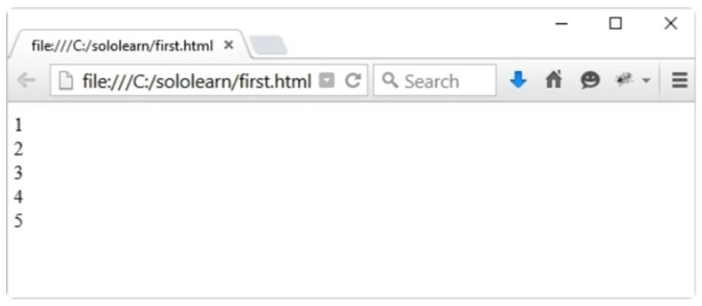
La declaración 1 es opcional, y puede ser omitida, si tus valores son fijados antes que el bucle comience.
var i = 1;
for (; i <= 5; i++) {
document.write(i + "<br>");
}
Adicionalmente, puedes inicializar más de un valor en la declaración 1, usando comas, para separarlos.
for (i = 1, text = ""; i <= 5; i++) {
text = i;
document.write(i + "<br>");
}
ES6 introduce otros tipos de loops for; puedes aprender sobre ellos más adelante en el curso de ES6.
Code Coach
El bucle for
Si la declaración 2 retorna verdadero, el bucle comenzará una y otra vez; si retorna falso, el bucle terminará. La declaración 2 es también opcional.
Si omites la declaración 2, tienes que proveer un break dentro del bucle. De otra forma, el bucle nunca terminaría.
La declaración 3 es utilizada para cambiar la variable inicial. Puede hacer cualquier cosa, incluyendo incrementos negativos (i--), incrementos positivos (i = i + 15), o cualquier otra cosa.
La declaración 3 es también opcional, y puede ser omitida si tú incrementas tus valores dentro del bucle.
var i = 0;
for(; i < 10; ) {
document.write(i);
i++;
}
Puedes tener múltiples bucles for anidados.
El bucle While
El bucle While
El bucle while repite un bloque de código, mientras una condición especificada sea verdadera.
Sintaxis:
while (condición) {
bloque de código
}
La condición puede ser cualquier declaración condicional que retorne verdadero o falso.
El bucle While
Considera el siguiente ejemplo.
var i = 0;
while (i <= 10) {
document.write(i + "<br>");
i++;
}
El bucle continuará siendo ejecutado mientras i sea menor o igual que 10. Cada vez que el bucle se ejecuta, i será incrementada por 1.
Esto desplegará los valores desde 0 hasta 10.
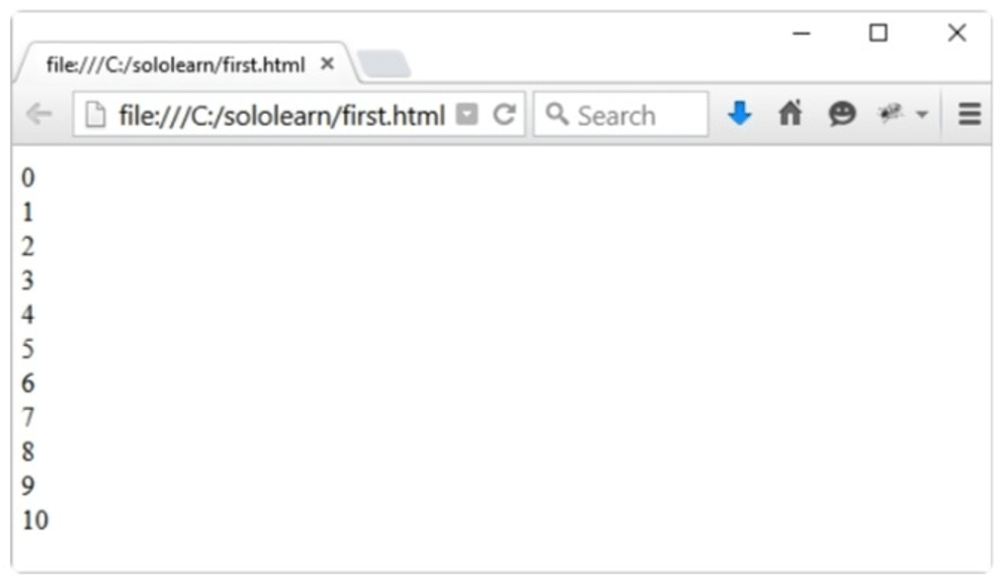
Ten cuidado cuando escribas condiciones. Si una condición siempre es true (verdadera), el ciclo se ejecutará indefinidamente.
Code Coach
El bucle while
Si olvidas incrementar la variable utilizada en la condición, el bucle nunca terminará.
Asegúrate de que la condición en un bloque while eventualmente se vuelva falsa.
El bucle Do...While
El bucle Do...While
El bucle do...while es una variante del bucle while. Este bucle ejecutará el código una vez antes de validar si la condición es verdadera, y entonces se repetirá el bucle mientras la condición sea verdadera.
Sintaxis:
do {
bloque de código
} while (condición);
Nota el punto y coma utilizado al final del bucle do...while.
Ejemplo:
var i = 20;
do {
document.write(i + "<br>");
i++;
}
while (i <= 25);
Esto imprime los número desde 20 hasta 25.
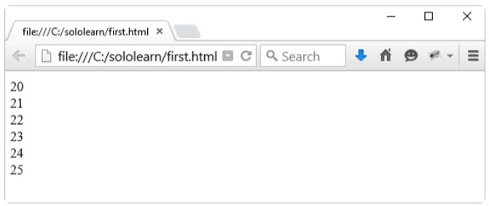
El bucle será siempre ejecutado al menos una vez, aún si la condición es falsa, porque el bloque de código es ejecutado antes de que la condición sea evaluada.
Break y Continue
Break
La declaración break "salta fuera" de un bucle y continúa ejecutando el código posterior al bucle.
for (i = 0; i <= 10; i++) {
if (i == 5) {
break;
}
document.write(i + "<br>");
}
Una vez que i alcance 5, saltará fuera del bucle.
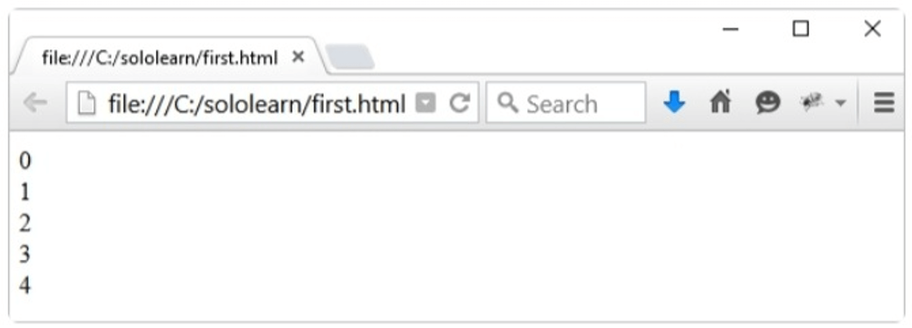
Puedes utilizar la palabra clave return para devolver algún valor inmediatamente desde una función ubicada dentro del bucle. Esto también romperá el loop.
Continue
La declaración continue detiene sólo una iteración en el bucle, y continúa con la siguiente iteración.
for (i = 0; i <= 10; i++) {
if (i == 5) {
continue;
}
document.write(i + "<br>");
}
Resultado:
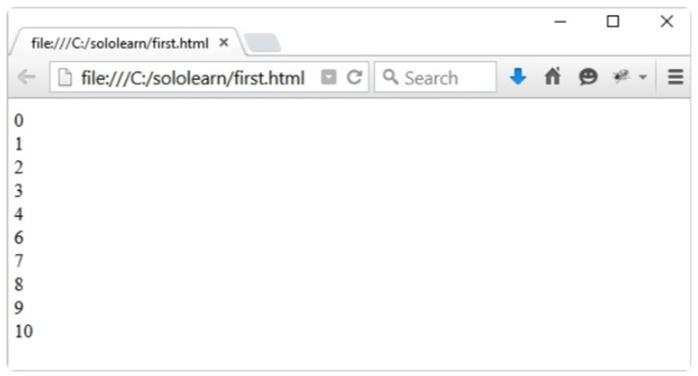
El valor 5 no es impreso, porque continue salta esa iteración del bucle.
Code Coach
Break y continue
Examen Módulo 3
Proyecto de codificación: El caracol en el pozo
Módulo 4: Funciones
Funciones definidas por el usuario
Funciones en JavaScript
Una función en JavaScript es un bloque de código designado para ejecutar una tarea en particular.
Las principales ventajas de usar funciones son:
Reusar el código: Define el código una sóla vez, y úsalo muchas veces.
Usa el mismo código muchas veces con argumentos diferentes.
Una función en JavaScript es ejecutada cuando "algo" la invoca, o la llama.
Definiendo una función
Para definir una función en JavaScript, utiliza la palabra clave function, seguida por el nombre, seguido por un conjunto de paréntesis.
El código a ser ejecutado por la función es colocado dentro de llaves {}.
function nombre() {
//código a ser ejecutado
}
Los nombres de las funciones pueden contener letras, dígitos, guiones bajos, y signos de dólar (mismas reglas que para las variables).
Llamando una función
Para ejecutar una función, necesitas llamarla. Para llamar una función, comienza con el nombre de la función, luego continúa con los argumentos entre paréntesis.
Ejemplo:
function miFuncion() {
alert("Llamndo a una función!");
}
miFuncion();
Siempre recuerda finalizar la declaración con un punto y coma después de llamar la función.
Llamando funciones
Una vez que la función es definida, JavaScript permite llamarla cuantas veces lo desees.
function miFuncion() {
alert("¡Caja de alerta!");
}
miFuncion();
//"¡Caja de alerta!"
// algún otro código
miFuncion ();
//"Caja de alerta!"
También puedes llamar a una función utilizando esta sintaxis: miFuncion.call(). La diferencia es que cuando llamas a una función de este modo, estás pasando la palabra clave 'this' a una función. Aprenderás más sobre ello más adelante.
Code Coach
Funciones definidas por el usuario
Los parámetros de las funciones
Los parámetros de las funciones
Las funciones pueden tomar parámetros. Los parámetros de las funciones son los nombres listados en la definición de la función.
Esto permitirá ejecutar el código de la función utilizando los valores introducidos en los argumentos.
Utilizando múltiples parámetros con funciones
Múltiples parámetros
Puedes definir múltiples parámetros para una función separándolos con comas.
function miFunc(x, y) {
// algún código
}
En el ejemplo anterior se define la función miFunc que toma dos parámetros.
Múltiples parámetros
Los parámetros son utilizados dentro de la definición de la función.
function diHola(nombre, edad) {
document.write(nombre + " tiene " + edad + " años.");
}
Los parámetros de la función son los nombres que se muestran en la definición de la función.
Múltiples parámetros
Cuando llames a la función, coloca los argumentos en el mismo orden en el que los definiste.
function diHola(nombre, edad) {
document.write(nombre + " tiene " + edad + " años.");
}
diHola("John", 20);
Si pasas más argumentos de los que están definidos, éstos serán asignados a un array llamado arguments. Pueden utilizarse de la siguiente manera: arguments[0], arguments[1], ...
Code Coach
Múltiples parámetros
Múltiples parámetros
Después de definir la función, puedes llamarla tantas veces como necesites.
Las funciones en JavaScript no validan el número de argumentos recibidos.
Si una función es llamada con argumentos omitidos (menos de los declarados), los valores omitidos son tomados como undefined (indefinido), lo que indica que a una variable no le ha sido asignado un valor.
La declaración return
Retorno de una función
Una función puede tener una declaración return opcional. Esta se utiliza para retornar un valor desde una función.
Esta declaración es útil cuando hacemos cálculos que requieren un resultado.
Cuando JavaScript llega hasta una declaración return, la función detiene su ejecución.
Retorno de una función
Utiliza la declaración return para retornar un valor.
Por ejemplo, vamos a calcular el producto de dos números, y retornar el resultado.
function miFuncion(a, b) {
return a * b;
}
var x = miFuncion(5, 6);
// El valor de retorno se almacenará en x
Si no retornas ningún valor desde la función, la misma retornará undefined.
Retorno de una función
Otro ejemplo:
function sumarNumeros(a, b) {
var c = a + b;
return c;
}
document.write(sumarNumeros(40, 2));
La instrucción document.write() despliega el valor retornado por la función, el cual es la suma de los dos parámetros.
Code Coach
La declaración return
Alert, prompt, confirm
La ventana de alerta
JavaScript ofrece tres tipos de ventanas emergentes:
Ventana de alert (alerta),
Ventana de prompt (ventana de solicitud),
Ventana de confirm (ventana de confirmación).
Ventana de alerta
Una ventana de alerta es utilizada cuando quieres asegurarte de que la información llegue hasta el usuario.
Cuando aparece una ventana de alerta, el usuario debe hacer clic en OK para proceder.
La función alert(texto) toma un sólo parámetro, el cual es el texto a desplegar en la ventana emergente.
Ejemplo:
alert("Do you really want to leave this page?");
Resultado:
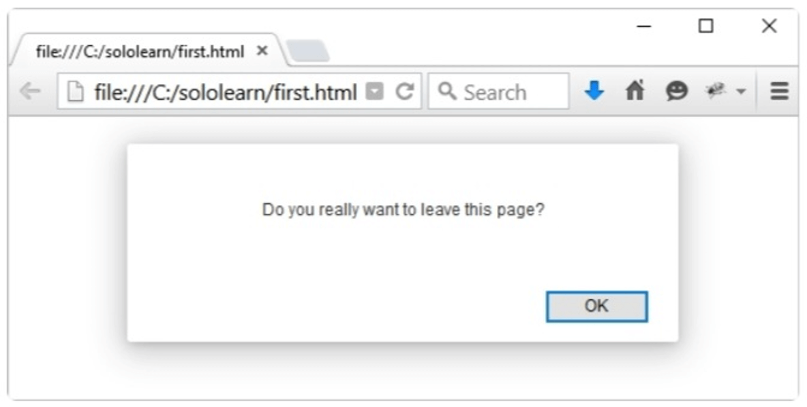
Para desplegar saltos de línea dentro de una ventana emergente, utiliza una barra inversa (\) seguida del carácter n.
alert("Hello\nHow are you?");
Resultado:
Ten cuidado cuando utilices ventanas de alerta, ya que el usuario sólo podrá continuar utilizando la página después de hacer clic en OK.
Ventana de solicitud
Una ventana de solicitud es utilizada usualmente para que el usuario ingrese un valor antes de ingresar a la página.
Cuando se despliega una ventana de solicitud, el usuario tendrá que hacer clic en OK o Cancel para poder proceder después de introducir el valor de entrada.
Si el usuario hace clic en OK, la ventana retorna el valor introducido. Si el usuario hace clic en Cancel, la ventana retorna null.
El método prompt(etiqueta, cadena) toma dos parámetros.
El primero es la etiqueta, que es el texto que quieres desplegar sobre el campo de texto.
El segundo es la cadena para desplegar dentro del campo de texto por defecto (opcional).
Ejemplo:
var user = prompt("Please enter your name");
alert(user);
Así se despliega la solicitud:
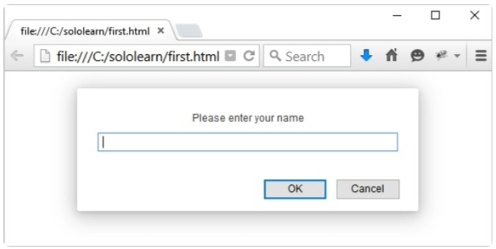
Cuando aparezca un cuadro de aviso , el usuario tendrá que hacer clic en "OK" o en "Cancel" para proceder tras introducir un valor de entrada. No utilices demasiado este método, ya que evita que el usuario acceda a otras partes de la página hasta que se cierre el recuadro.
Ventana de confirmación
Una ventana de confirmación es utilizada comúnmente para permitir al usuario validar o aceptar algo.
Cuando una ventana de confirmación emerge, el usuario debe hacer clic en OK o Cancel para poder proceder.
Si el usuario hace clic en OK, la ventana retornará verdadero. Si el usuario hace clic en Cancel, la ventana retornará falso.
Ejemplo:
var result = confirm("Do you really want to leave this page?");
if (result == true) {
alert("Thanks for visiting");
} else {
alert("Thanks for staying with us");
}
Resultado:
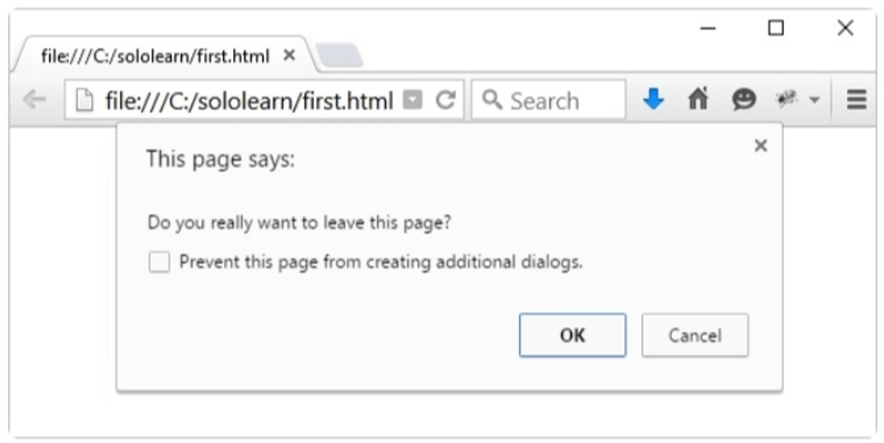
Este es el resultado cuando el usuario hace clic en OK:
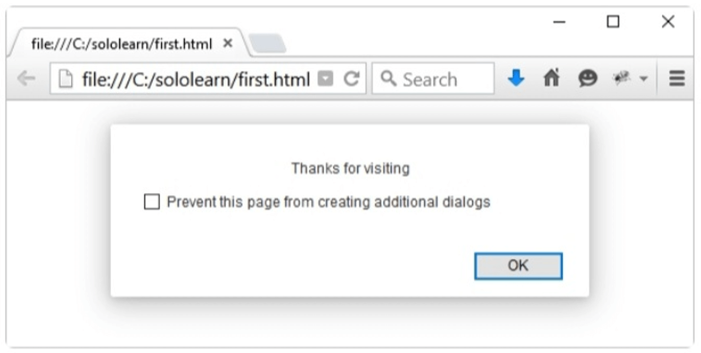
Este es el resultado cuando el usuario hace clic en Cancel:
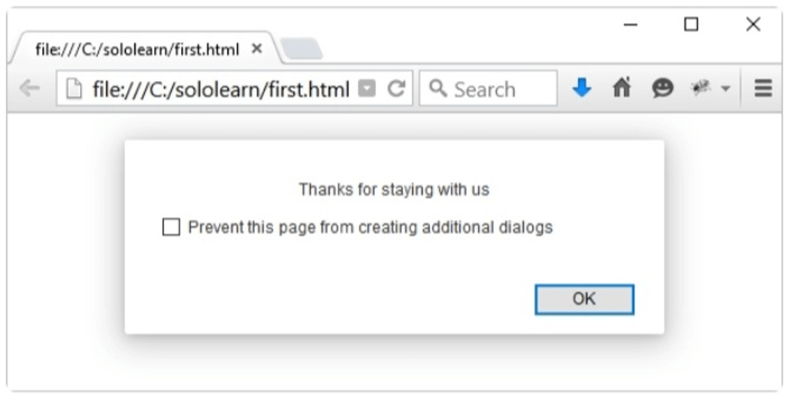
No utilices demasiado este método, ya que también evita que el usuario acceda a otras partes de la página hasta que se cierre el recuadro.
Examen Módulo 4
Proyecto de codificación: Conversor de monedas
Módulo 5: Objetos
Introducción a los objetos
Objetos en JavaScript
La variables en JavaScript son contenedores para valores y data. Los objetos también son variables, pero ellos pueden contener muchas variables.
Piensa en los objetos como una lista de valores que son escritos como pares name:value (nombre:valor), con los nombres y los valores separados por dos puntos.
Ejemplo:
var person = {
name: "John", age: 31, favColor: "green", height: 183
};
Estos valores son llamados propiedades.
Los objetos en JavaScript son contenedores para valores con nombre.
Propiedades de objetos
Puedes acceder a las propiedades de los objetos de dos maneras.
Este ejemplo demuestra como acceder la edad de nuestro objeto persona.
var person = {
name: "John", age: 31, favColor: "green", height: 183
};
var x = person.age;
var y = person['age'];
La propiedad incorporada length en JavaScript es uti I izada para contar el número de caracteres en una propiedad o cadena de texto.
var course = {name: "JS", lessons: 41};
document.write(course.name.length);
Objects (objetos) son uno de los conceptos fundamentales de JavaScript.
Métodos de objetos
Un método de Objeto es una propiedad que contiene la definición de una función.
Utiliza la siguiente sintaxis para acceder al método del objeto.
objectName.methodName()
Tal y como ya sabes, document.wrlteO despliega data. La función wrlteO realmente es un método del objeto document.
document.write("This is some text");
Los métodos son funciones que han sido guardadas como propiedades de objetos.
Code Coach
Introduciendo objetos
Creando tus propios objetos
El constructor de objetos
En la lección anterior, creamos un objeto utilizando la sintaxis de literal de objeto (o inicializador).
var person = {
name: "John", age: 42, favColor: "green"
};
Esto te permite crear un único objeto. Algunas veces, necesitamos configurar un "tipo de objeto" que pueda ser usado para crear un número de objetos de un mismo tipo.
La forma estándar para crear un "tipo de objeto" es utilizando una función constructora de objetos.
function person (name, age, color) {
this.name = name;
this.age = age;
this.favColor = color;
};
La función anterior (persona) es un constructor de objeto, que toma parámetros y los asigna a las propiedades del objeto.
La palabra clave this refiere al objeto actual.
Nota que this no es una variable. Es una palabra clave, y su valor no puede ser cambiado.
Creando objetos
Una vez que tengas un constructor de objetos, puedes utilizar la palabra clave new para crear nuevos objetos del mismo tipo.
var p1 = new person("John", 42, "green");
var p2 = new person("Amy", 21, "red");
document.write(p1.age); // Outputs 42
document.write(p2.name); // Outputs "Amy"
Pulsa para intentarlo 1 p 1 y p2 son ahora objetos del tipo person. Sus propiedades son asignadas a los valores correspondientes.
Creando objetos
Considera el siguiente ejemplo.
function person (name, age) {
this.name = name;
this.age = age;
}
var John = new person("John", 25);
var James = new person("James", 21);
Accede a las propiedades del objeto utilizando la sintaxis de punto, como hiciste anteriormente.
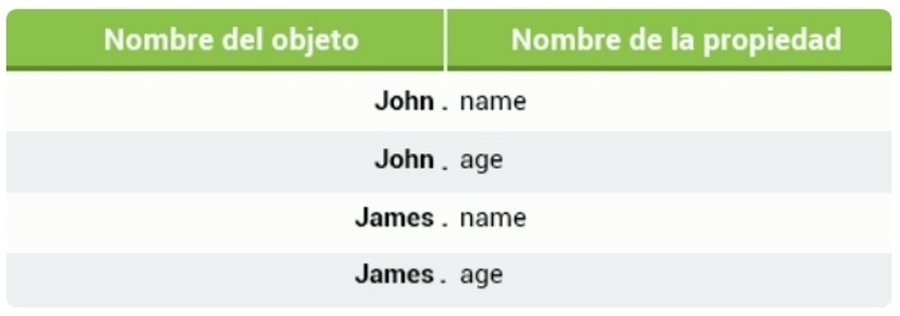
Es esencial comprender la creación de objects.
Code Coach
Creando tus propios objetos
Inicialización de objetos
Inicialización de objetos
Utiliza la sintaxis de literal de objetos o lnlclallzador para crear un sólo objeto.
var John = {name: "John", age: 25};
var James = {name: "James", age: 21};
Los Objects consisten en propiedades que se utilizan para describir un objeto. Los valores de las propiedades de objetos pueden contener tipos de datos primitivos u otros objetos.
Utilizando inicializadores de objetos
Los espacios y saltos de línea no son importantes. La definición de un objeto puede expandirse múltiples líneas.
var John = {
name: "John",
age: 25
};
var James = {
name: "James",
age: 21
};
No importa cómo el objeto sea creado, la sintaxis para acceder a las propiedades y métodos no cambia.
document.write(John.age);
No te olvides de la segunda sintaxis de acceso: John['age'].
Añadiendo métodos
Métodos
Los métodos son funciones que se guardan como propiedades de un objeto.
Utiliza la siguiente sintaxis para crear un método de objeto:
methodName = function () { code lines }
Accede a un método de objeto utilizando la sintaxis siguiente:
objectName.methodName()
Un método es una función, que pertenece a un objeto. Puede ser referenciada utilizando la palabra clave this.
La palabra clave this es utilizada como una referencia al objeto actual, lo que significa que puedes utilizarla para acceder a las propiedades y métodos de los objetos.
La definición de métodos se realiza dentro del constructor de la función.
Por ejemplo:
function person(name, age) {
this.name = name;
this.age = age;
this.changeName = function (name) {
this.name = name;
}
}
var p = new person("David", 21);
p.changeName("John");
//Ahora p.name es igual a "John"
En el ejemplo anterior, hemos definido un método llamado changeName para nuestra persona, que es una función, que toma un parámetro name y se lo asigna a la propiedad name del objeto.
this.nombre se refiere a la propiedad nombre del objeto.
El método changeName cambia la propiedad name del objeto a su argumento.
Code Coach
Añadiendo Métodos
Métodos
También puedes definir la función fuera del constructor y asociarla con el objeto.
function person (name, age) {
this.name = name;
this.age = age;
this.yearOfBirth = bornYear;
}
function bornYear() {
return 2016 - this.age;
}
Como puedes ver, hemos asignado la propiedad yearOfBlrth del objeto a la función bomYear.
La palabra clave this es utilizada para acceder a la propiedad age del objeto, que va a llamar el método.
Ten presente que no es necesario escribir los paréntesis de la función cuando es asignada a un objeto.
Métodos
Llama al método como siempre.
function person (name, age) {
this.name= name;
this.age = age;
this.yearOfBirth = bornYear;
}
function bornYear() {
return 2016 - this.age;
}
var p = new person("A", 22);
document.write(p.yearOfBirth());
Llama al método por el nombre de la propiedad que especificaste en la función constructora, en lugar del nombre de la función.
Examen Módulo 5
Proyecto de codificación: Gestión de contacto
Módulo 6: Objetos principales predefinidos
Arreglos
Arreglos en JavaScript
Los arreglos registran múltiples valores en un sola variable.
Para registrar tres nombres de cursos, necesitas tres variables.
var curso1 = "HTML";
var curso2 = "CSS";
var curso3 = "JS";
Pero, ¿qué pasa si tienes 500 cursos? La solución es un objeto predefinido de JavaScript llamado arreglo (o array).
var cursos = new Array("HTML", "CSS", "JS");
Esta sintaxis declara un arreglo llamado cursos, el cual registra tres valores, o elementos.
Accediendo a un arreglo
Se hace referencia a un elemento de un arreglo (o matriz) mediante su número de índice escrito entre corchetes.
Esta declaración accede al valor del primer elemento del arreglo "cursos" y cambia el valor de su segundo elemento.
var cursos = new Array("HTML", "CSS", "JS");
var curso = cursos[0]; // HTML
cursos[1] = "C++"; // Cambia el segundo elemento
El primer elemento de un arreglo es [0]; el segundo, [1]; el tercero, [2]; etc. Los índices de un arreglo comienzan con 0.
Accediendo a un arreglo
Intentar acceder a un índice fuera del arreglo, retorna el valor undefined (indefinido).
var courses = new Array("HTML", "CSS", "JS");
document.write(courses[10]); //undefined
Nuestro arreglo courses tiene sólo tres elementos, por lo que el 10° índice, que sería el elemento numero 11, no existe (está indefinido).
Code Coach
Matrices
Otras formas para crear arreglos
Creando arreglos
También puedes declarar un arreglo, indicando el número de elementos que contendrá, y añadiendo los elementos posteriormente.
var cursos = new Array(3);
cursos[0] = "HTML";
cursos[1] = "CSS";
cursos[2] = "JS";
Un arreglo es un tipo especial de objeto. Un arreglo utiliza números para acceder sus elementos, y un objeto utiliza nombres para acceder a sus miembros.
Creando arreglos
Los arreglos en JavaScript son dinámicos, por lo que puedes declarar un arreglo y no pasarle ningún argumento a su función constructora Array(). Y posteriormente, puedes añadir los elementos de forma dinámica.
var cursos = new Array();
cursos[0] = "HTML";
cursos[1] = "CSS";
cursos[2] = "JS";
cursos[3] = "C++";
Puedes añadir tantos elementos como necesites.
Literales de arreglos
Para mayor simplicidad, legibilidad, y velocidad de ejecución, también puedes declarar arreglos utilizando la sintaxis de literal de arreglos.
var cursos = ["HTML", "CSS", "JS"];
El resultado es el mismo arreglo que el que fue creado con la sintaxis new Array().
Puedes acceder a los elementos del arreglo y modificarlos utilizando su número de índice, tal y como lo hiciste anteriormente.
La sintaxis de literal de arreglo es la manera recomendada para declarar arreglos.
Propiedades y métodos de los arreglos
La propiedad length
Los arreglos en JavaScript tienen propiedades y métodos útiles integrados de manera estándar.
La propiedad length (longitud) de un arreglo retorna el número de sus elementos.
var cursos = ["HTML", "CSS", "JS"];
document.write(cursos.length);
La propiedad length es siempre uno más que el mayor índice del arreglo. Si el arreglo está vacío, la propiedad length retorna 0.
Combinando arreglos
El método concat() de JavaScript te permite juntar arreglos y crear un arreglo completamente nuevo.
Ejemplo:
var c1 = ["HTML", "CSS"];
var c2 = ["JS", "C++"];
var courses = c1.concat(c2);
El arreglo courses resultante contiene 4 elementos (HTML, CSS, JS y C++).
La operación concat no afecta a los arreglos c1 y c2, sólo retorna la concatenación resultante como un nuevo arreglo.
Code Coach
Propiedades de matrices & método
Arreglos asociativos
Arreglos asociativos
Mientras que muchos lenguajes de programación soportan arreglos con nombres en los índices (texto en lugar de números), llamados arreglos asociativos, JavaScript no los soporta. Sin embargo, puedes utilizar la sintaxis de nombramiento de arreglos, que producirá un objeto.
Por ejemplo:
var persona = []; //arreglo vacío
persona["nombre"] = "John";
persona["edad"] = 46;
document.write(persona["edad"]); // 46
Ahora, persona es tratado como un objeto, en lugar de como un arreglo.
Los índices textuales "nombre" y "edad" se convierten en propiedades del objeto persona.
Como el arreglo persona es tratado como un objeto, los métodos y propiedades estándar para arreglos producirán resultados incorrectos. Por ejemplo, persona.length retornará 0.
Arreglos asociativos
Recuerda que JavaScript no soporta arreglos con índices textuales.
En JavaScript, los arreglos siempre usan índices numéricos.
Es mejor utilizar un objeto cuando quieres que el índice sea una cadena de texto.
Utiliza un arreglo cuando quieras que el índice , sea un numero.
Si utilizas un índice textual, JavaScript redefinirá el arreglo como un objeto estándar.
El objeto Math
El objeto Math
El objeto Math te permite realizar tareas matemáticas, e incluye varias propiedades [pares clave: valor; recuerda que puedes acceder a los valores de las propiedades de un objeto usando la sintaxis de punto: nombreDelObjeto.nombreDeLaPropiedad].
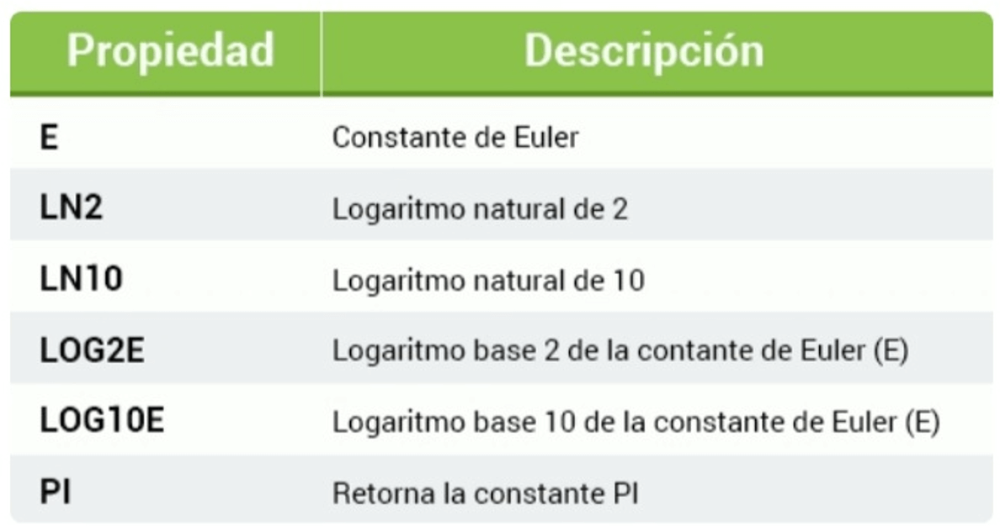
Por ejemplo:
document.write(Math.PI);
El objeto Math no tiene constructor. [No se puede usar la palabra clave new con el objeto Math para crear objetos de tipo Math]. No hay necesidad de primero crear un objeto Math.
Métodos del objeto Math
El objeto Math posee muchos métodos [propiedades que son funciones] que son utilizados para hacer cálculos:
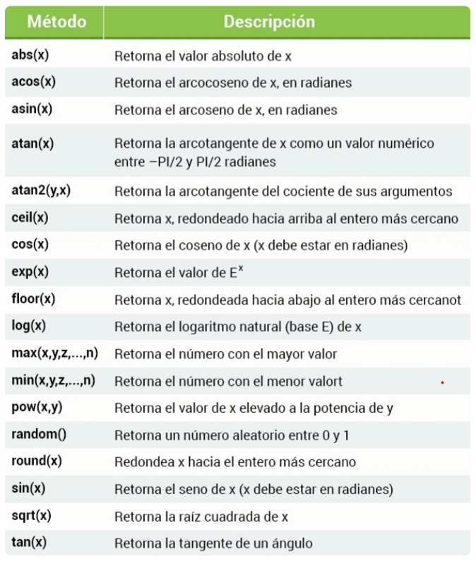
Por ejemplo, el siguiente código calculará la raíz cuadrada de un número.
var raiz_cuadrada_de_4 = Math.sqrt(4);
document.write(raiz_cuadrada_de_4);
Para obtener un número entero aleatorio entre 1 y 10, utiliza el método Math.random(), el cual te da un número entre 0 y 1. A continuación multiplica el número obteniendo por 10, y elimina su parte decimal redondeándolo al número entero mayor más cercano mediante el método Math.ceil(): Math.ceil(Math.random() * 10).
Code Coach
El objeto Math
El objeto Math
Vamos a crear un programa que solicitará al usuario que ingrese un número y alertará su raíz cuadrada.
var n = prompt("Enter a number", "");
var answer = Math.sqrt(n);
alert("The square root of " + n + " is " + answer);
Resultado:
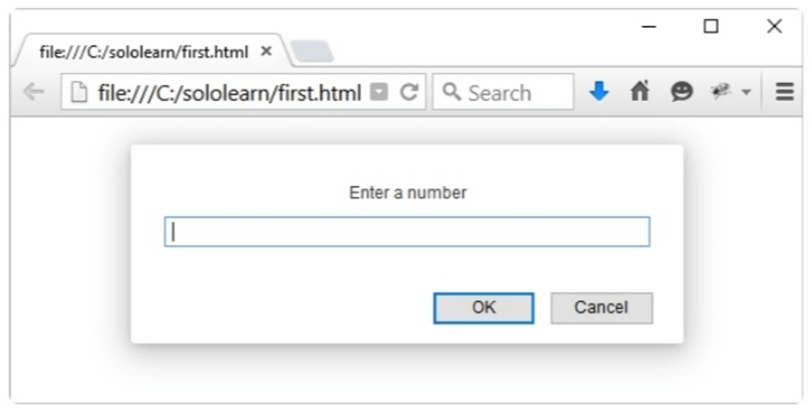
Ingrese un número, como 64.
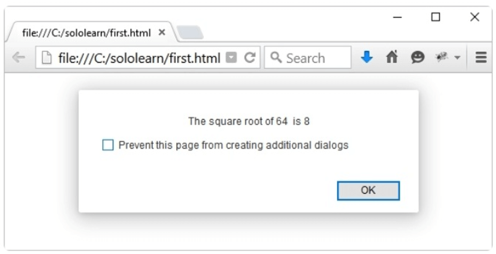
Math es un objeto útil. Puedes ahorrar mucho tiempo utilizando Math en vez de escribir tus propias funciones cada vez.
El objeto Date
Método setlnterval
El método setlnterval(funcion, milisegundos) llama una función o evalúa una expresión a intervalos específicos (en milisegundos).
Este método continuará llamando a la función pasada como argumento hasta que el método clearlnterval(ID_del_intervalo) es llamado o la ventana es cerrada.
Por ejemplo:
function myAlert() {
alert("Hi");
}
setInterval(myAlert, 3000);
Este código llamará la función myAlert cada 3 segundos (1000 ms = 1 segundo).
Escribe el nombre de la función sin los paréntesis cuando la pases como argumento al método setlnterval.
El objeto Date
El objeto Date (fecha en Inglés) nos permite trabajar con fechas.
Una fecha consiste en un año, un mes, un día, una hora, un minuto, un segundo, y milisegundos.
Al utilizar new Date(), creamos un nuevo objeto "date" con la fecha y hora actual.
var d = new Date(); //d almacena la fecha y hora actual
Las otras formas de inicializar fechas nos permiten la creación de nuevos objetos "date" a partir de la fecha y hora especificada.
new Date(milisegundos)
new Date(cadenaDeFecha)
new Date(anio, mes, dia, horas, minutos, segundos, milisegundos)
Las fechas en JavaScript son calculadas en milisegundos desde el 1⁰ de Enero de 1970 00:00:00 hora universal (UTC). Un día contiene 86.400.000 milisegundos.
Por ejemplo
//viernes 2 de enero de 1970, 00:00:00 hs
var d1= new Date(86400000);
//viernes 2 de enero de 2015, 10:42:00 hs
var d2 = new Date("January 2, 2015 10:42:00");
//sábado 11 de junio de 1988, 11:42:00 hs
var d3 = new Date(88,5,11,11,42,0,0);
JavaScript cuenta los meses desde 0 y hasta 11. Enero es 0 y diciembre es 11.
Los objetos Date son estáticos, en lugar de dinámicos. La hora de tu computadora continúa avanzando, pero los objetos date una vez creados no cambiarán.
Métodos del objeto Date
Cuando un objeto Date es creado, una serie de métodos hacen posible ejecutar operaciones en él.
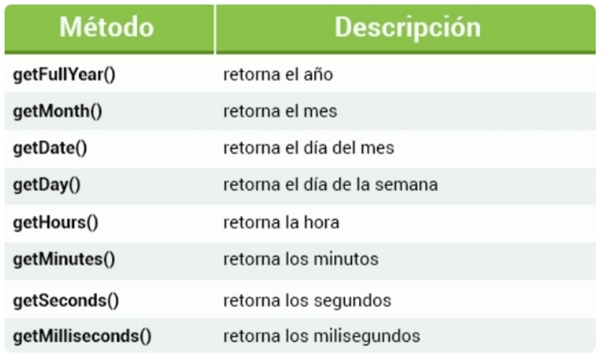
Por ejemplo:
var d = new Date();
var hours = d.getHours();
//hours es igual a la hora actual
Vamos a crear un programa que imprima la hora actual en el navegador cada segundo.
function printTime() {
var d = new Date();
var hours = d.getHours();
var mins = d.getMinutes();
var secs = d.getSeconds();
document.body.innerHTML = hours+":"+mins+":"+secs;
}
setInterval(printTime, 1000);
Hemos declarado una función printTime, la cual toma la hora actual del objeto date, y la imprime en la pantalla.
Luego llamamos a la función una vez cada segundo, utilizando el método setlnterval.
La propiedad innerHTML establece o retorna el contenido de un elemento HTML [o sea lo que está encerrado entre sus etiquetas de apertura y de cierre].
En nuestro caso, estamos cambiando el contenido del elemento "body" de nuestro documento HTML. Este código sobrescribe el contenido cada segundo, en lugar de imprimirlo continuamente en la pantalla.
Code Coach
El objeto fecha
Examen Módulo 6
Proyecto de codificación: Gestión de tienda
Módulo 7: DOM y Eventos
¿Qué es DOM?
El DOM
Cuando abres cualquier página web en el navegador, el código HTML de la página es cargado y reproducido visualmente en la pantallla.
Para lograr esto, el navegador construye el Modelo de Objetos del Documento (Document Object Model en Inglés) de la página, que es un modelo orientado a objetos de su estructura lógica.
El DOM (por sus siglas en inglés) de un documento HTML puede ser representado como un conjunto de cajas anidadas:
Se puede utilizar JavaScript para manipular el DOM de una página de forma dinámica para añadir, borrar y modificar elementos.
El árbol del DOM
El DOM representa un documento como una estructura de árbol.
Los elementos HTML se convierten en nodos interrelacionados en el árbol.
Todos esos nodos en el árbol tienen algún tipo de relación entre ellos.
Los nodos pueden tener nodos hijos (child en Inglés). Los nodos en el mismo nivel del árbol son llamados hermanos (siblings en Inglés).
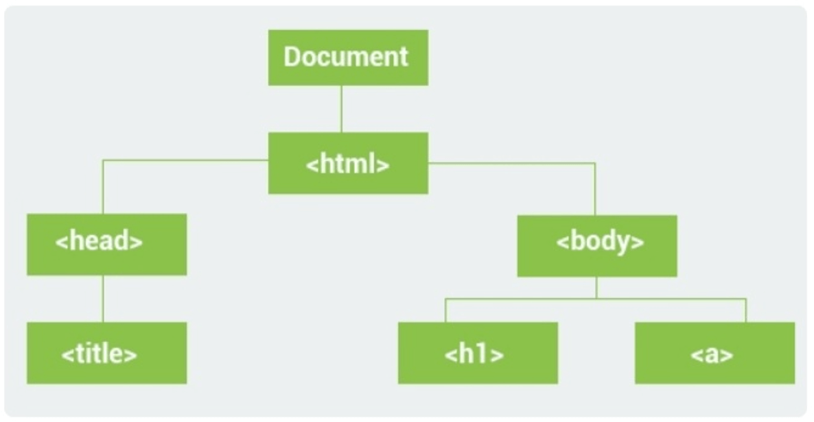
Del ejemplo anterior:
<html> tiene dos hijos (<head>, <body>);
<head> tiene un hijo (<title>) y un padre (<html>);
<title> tiene un padre (<head>) y no tiene hijos;
<body> tiene dos hijos (<h1 > y <a>) y un padre (<html>);
Es importante entender las relaciones entre los elementos en un documento HTML con el fin de ser capaz de manipularlos con JavaScript.
El objeto ''document''
Hay un objeto "document" predefinido en JavaScript, que puede ser utilizado para acceder a todos los elementos del DOM.
En otras palabras, el objeto "document" es el dueño (o raíz) de todos los objetos en tu página web.
Por lo tanto, si quieres acceder a los elementos de una página HTML, siempre comienza accediendo al objeto "document".
Como "body" es un elemento del DOM, podemos acceder a él utilizando el objeto "document" y modificar el contenido de su propiedad innerHTML.
La propiedad innerHTML puede ser utilizada en casi todos los elementos HTML para modificar el código HTML que contienen.
Seleccionando elementos
Seleccionando elementos
Todos los elementos HTML son objetos, y como ya sabemos, cada objeto tiene propiedades y métodos.
El objeto "document'' tiene métodos que te permiten seleccionar el elemento HTML deseado.
Estos tres métodos son los más comúnmente utilizados para seleccionar elementos HTML:
//encontrar un elemento por su id
document.getElementById(id_del_elemento)
//encontrar elementos por el nombre de su clase
document.getElementsByClassName(nombre_de_la_clase)
//encontrar elementos por el nombre de su etiqueta
document.getElementsByTagName(etiqueta_HTML)
En el siguiente ejemplo, el método getElementByld es utilizado para seleccionar el elemento con id="demo" y cambiar su contenido:
var elem = document.getElementById("demo");
elem.innerHTML = "Hello World!";
El ejemplo anterior asume que el HTML contiene un elemento con id="demo", por ejemplo <div id="demo"></div>.
Seleccionando elementos
El método getElementsByClassName() encuentra todos los elementos por nombre de clase y los retorna como un arreglo.
Por ejemplo, si nuestra página HTML contiene tres elementos con class="demo", el siguiente código retornará todos esos elementos como un arreglo:
var arr = document.getElementsByClassName("demo");
//acceder al segundo elemento
arr[1].innerHTML = "Hi";
Similarmente, el método getElementsByTagName retorna todos los elementos de la etiqueta especificada como un arreglo.
El siguiente ejemplo obtiene todos los elementos "p" (párrafos) de la página y cambia su contenido:
<p>hi</p>
<p>hello</p>
<p>hi</p>
<script>
var arr = document.getElementsByTagName("p");
for (var x = 0; x < arr.length; x++) {
arr[x].innerHTML = "Hi there";
}
</script>
La secuencia anterior resultará en el siguiente código HTML:
<p>Hi there</p>
<p>Hi there</p>
<p>Hi there</p>
Utilizamos la propiedad length del arreglo para iterar a través de todos los elementos seleccionados en el ejemplo anterior.
Trabajando con DOM
Cada elemento en el DOM tiene una serie de propiedades y métodos que proveen información acerca de sus relaciones entre sí:
childNodes retorna un arreglo que contiene los nodos hijos de un elemento.
firstChild retorna el primer nodo hijo de un elemento.
lastChild retorna el último nodo hijo de un elemento.
hasChildNodes retorna verdadero si un elemento tiene al menos un nodo hijo, de lo contrario retorna falso.
nextSibling retorna el siguiente nodo que se encuentre al mismo nivel en el árbol DOM.
previousSibling retorna el nodo anterior que se encuentre al mismo nivel en el árbol DOM.
parentNode retorna el nodo padre de un elemento.
Podemos, por ejemplo, seleccionar todos los nodos hijos de un elemento y cambiar su contenido.
<html>
<body>
<div id="demo">
<p>some text</p>
<p>some other text</p>
</div>
<script>
var a = document.getElementById("demo");
var arr = a.childNodes;
for(var x = 0; x < arr.length; x++) {
arr[x].innerHTML = "new text";
}
</script>
</body>
</html>
El código anterior cambia el texto de ambos párrafos a "new text".
Modificando elementos
Modificando atributos
Una vez que has seleccionado los elementos con los que quieres trabajar, puedes modificar sus atributos.
Tal y como hemos visto en lecciones anteriores, podemos modificar el texto contenido en un elemento utilizando la propiedad lnnerHTML. Similarmente, podemos cambiar los atributos de los elementos.
Por ejemplo, podemos cambiar el atributo src de una imagen:
<img id="myimg" src="orange.png" alt="" />
<script>
var el = document.getElementById("myimg");
el.src = "apple.png";
</script>
Podemos cambiar el atributo href de un enlace:
<a href="http://www.example.com">Some link</a>
<script>
var el = document.getElementsByTagName("a");
el[0].href = "http://www.sololearn.com";
</script>
Prácticamente, todos los atributos de un elemento pueden ser cambiados utilizando JavaScript.
Modificando el estilo
El estilo de los elementos HTML también puede ser modificado utilizando JavaScript.
Puedes acceder a todos los atributos utilizando el objeto style del elemento.
Por ejemplo:
<div id="demo" style="width:200px">some text</div>
<script>
var x = document.getElementById("demo");
x.style.color = "6600FF";
x.style.width = "100px";
</script>
El código anterior modifica el color del texto y el ancho del elemento div.
Se pueden establecer y modificar todas las propiedades CSS utilizando JavaScript. Sólo recuerda, que no puedes utilizar guiones (-) en los nombres de las propiedades: estos son reemplazados con versiones "camelCase", donde la palabra que sigue a un guión comienza con una letra mayúscula.
Por ejemplo: la propiedad background-color debe ser referida como backgroundColor.
Añadiendo y removiendo elementos
Creando elementos
Utiliza los métodos siguientes para crear nuevos nodos:
cloneNode(): clona un elemento y retorna el nodo resultante. Es un método poseído por los objetos elementos.
createElement(elemento): crea un nuevo nodo con el elemento correspondiente. Es un método del objeto documento.
createTextNode(texto): crea un nuevo nodo de texto. Es otro método del objeto documento.
Por ejemplo:
var node = document.createTextNode("Some new text");
EL código anterior creará un nuevo nodo de texto, pero no aparecerá en el documento hasta que lo añadas a un elemento existente con alguno de los siguientes métodos de los objetos que representan a los elementos HTML:
appendChild(newNode) añade un nuevo nodo hijo a un elemento como el último de sus hijos.
insertBefore(node1, node2) inserta node1 como un hijo antes del node2.
Ejemplo:
<div id="demo">some content</div>
<script>
//crear un nuevo párrafo
var p = document.createElement("p");
//crear un nuevo nodo de texto
var node = document.createTextNode("Some new text");
//añadir el texto al párrafo
p.appendChild(node);
//obtener el contenedor del párrafo
var div = document.getElementById("demo");
//añadir el párrafo al div
div.appendChild(p);
</script>
El código anterior crea un nuevo párrafo y lo añade al elemento div existente de la página.
Removiendo elementos
Para remover un elemento HTML, debes seleccionar el padre del elemento y utilizar el método removeChild(node).
Por ejemplo:
<div id="demo">
<p id="p1">Este es un párrafo.</p>
<p id="p2">Este es otro párrafo.</p>
</div>
<script>
var parent = document.getElementById("demo");
var child = document.getElementById("p1");
parent.removeChild(child);
</script>
En el código anterior, el párrafo con id = "p1" es removido de la página.
Una forma alternativa para lograr el mismo resultado sería utilizar la propiedad parentNode para obtener el padre del elemento que queremos remover:
var child = document.getElementByld("p1");
child.parentNode.removeChild(child)
Reemplazando elementos
Para reemplazar un elemento HTML, se utiliza el método replaceChild(newNode, oldNode), que es un método de los objetos que representan elementos HTML.
Por ejemplo:
<div id="demo">
<p id="p1">Este es un párrafo.</p>
<p id="p2">Este es otro párrafo.</p>
</div>
<script>
var p = document.createElement("p");
var node = document.createTextNode("This is new");
p.appendChild(node);
var parent = document.getElementById("demo");
var child = document.getElementById("p1");
parent.replaceChild(p, child);
</script>
El código anterior crea un nuevo elemento "párrafo" que reemplaza al párrafo "p1" existente.
Creando animaciones
Animaciones
Ahora que sabemos cómo seleccionar y cambiar elementos del DOM, podemos crear una animación simple.
Vamos a crear una página HTML sencilla con un elemento "box'' que será animado utilizando JS.
Nuestro elemento "box'' está dentro de un elemento "container''. Fijate en el atributo "position" (posición) utilizado por los elementos: para el contenedor es relatlve (relativa) y para la box es "absolute" (absoluta). Esto nos permite crear la animación relativa al contenedor, porque los elementos con posición absoluta se pueden desplazar con respecto al primer contenedor con posición absoluta, usando los atributos left y right.
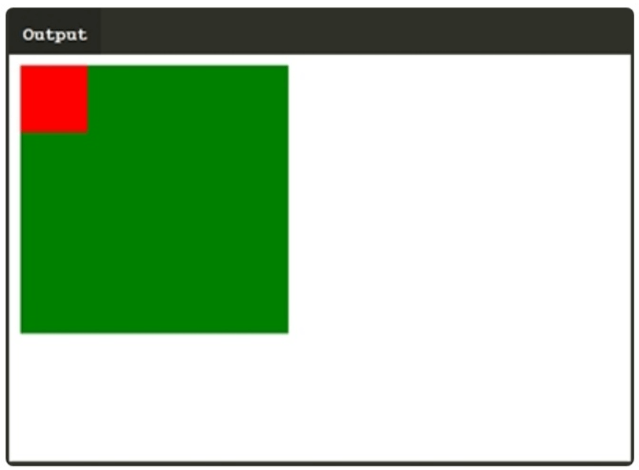
Estaremos animando la caja roja para hacer que se mueva al lado derecho del contenedor.
Necesitas estar familiarizado con CSS para entender mejor el código utilizado.
Animaciones
Para crear una animación, debemos cambiar las propiedades de un elemento a pequeños intervalos de tiempo. Podemos lograr esto utilizando el método setInterval(), el cual nos permite crear un cronómetro y llamar una función para cambiar propiedades repetidamente a intervalos definidos (en milisegundos).
Por ejemplo:
var t = setInterval(move, 500);
Este código crea un cronómetro que llama la función mover() cada 500 milisegundos. La variable t almacenará el ID retornado por la función setInterval() al ser llamada.
Ahora necesitamos definir la función mover(), que modifica la posición de la caja.
// Posición inicial
var pos = 0;
//nuestro elemento box
var box = document.getElementById("box");
function mover() {
pos += 1;
box.style.left = pos+"px"; //px = pixeles
}
La función mover() incrementa la propiedad left del elemento "box" en uno cada vez que es llamada.
Animaciones
El siguiente código define un cronómetro que llama la función mover() cada 10 milisegundos:
var t = setInterval(mover, 10);
Sin embargo, esto hace que nuestra caja se mueva hacia la derecha por siempre. Para detener la animación cuando la caja alcance el final del contenedor, añadimos una validación sencilla a la función mover() y utilizamos el método clearlnterval(ID_del_cronometro) para detener el cronómetro.
Cuando el atributo "left" de la caja llega al valor de 150, la caja alcanzará el final del contenedor, basado en que el ancho del contenedor es 200 y el ancho de la caja es 50.
El código final:
function() {
var pos = 0;
//nuestro elemento box
var box = document.getElementById('box');
var t = setInterval(move, 10);
function move() {
if(pos >= 150) {
clearInterval(t);
}
else {
pos += 1;
box.style.left = pos+'px';
}
}
}
Felicitaciones, ¡acabas de crear tu primera animación en JavaScript!
Manejando eventos
Eventos
Puedes escribir código JavaScript que se ejecute cuando un evento ocurra, como cuando un usuario hace clic en un elemento HTML, mueve el ratón, o envía un formulario.
Cuando un evento ocurre en un elemento objetivo, una función "handler" (manejadora) es ejecutada.
Eventos HTML comunes incluyen:
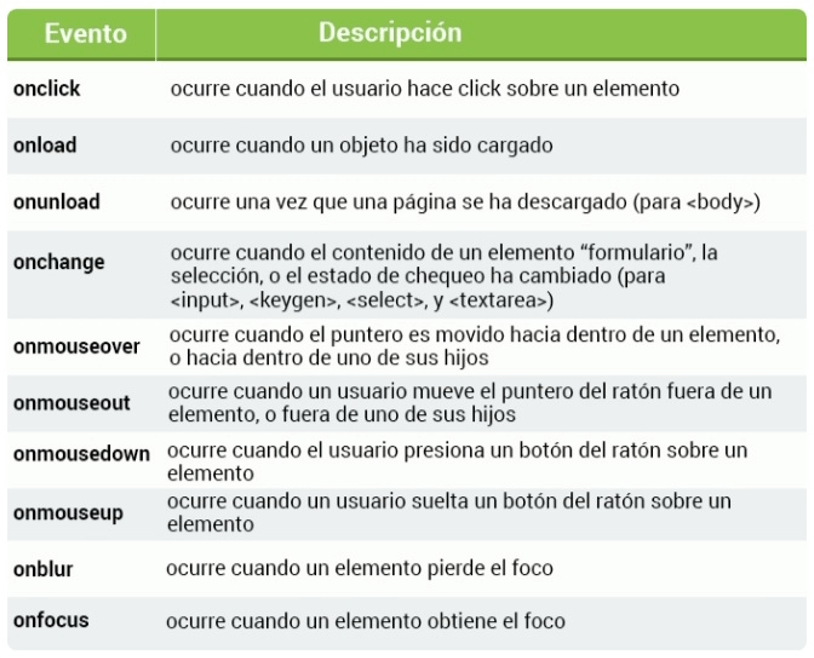
Los eventos correspondientes pueden ser añadidos a elementos HTML como atributos.
Por ejemplo: <p onclick="algunaFunc()">some text</p>
Manejando eventos
Vamos a desplegar una ventana emergente de alerta cuando el usuario haga clic sobre un botón específico:
Las funciones manejadoras de eventos pueden ser asignadas a los eventos de los elementos. Los eventos son propiedades de de los objetos que representan a los elementos HTML.
Por ejemplo:
var x = document.getElementById('demo');
x.onclick = function () {
document.body.innerHTML = Date();
}
El objeto x representa al elemento con id = "demo" y la propiedad onclick del objeto x representa al atributo onclick del elemento con id = "demo". Puedes adjuntar eventos a prácticamente todos los elementos HTML.
Eventos
Los eventos onload y onunload son desencadenados cuando el usuario entra o sale de la página. Esto puede ser útil cuando se realizan acciones después de que la página es cargada.
<body onload="hazAlgo()">
Similarmente, el evento window.onload puede ser utilizado para ejecutar código después de que toda la página ha sido cargada.
window.onload = function() {
//some code
}
El evento onchange es usado principalmente en "textboxes" (campos de texto). La función manejadora del evento es llamada cuando el texto dentro de un textbox cambia y el elemento pierde el foco.
Por ejemplo:
<input type="text" id="name" onchange="change()">
<script>
function change() {
var x = document.getElementById('name');
x.value = x.value.toUpperCase();
}
</script>
Es importante comprender los eventos ya que son una parte esencial de la dinámica de las páginas web.
Detectores de eventos
El método addEventlistener() agrega un detector de eventos a un elemento sin sobrescribir detectores de eventos existentes. Puedes añadir muchos detectores de eventos a un mismo elemento.
También puedes añadir muchos detectores de eventos del mismo tipo a un mismo elemento, p. ej., dos eventos "click".
El primer parámetro es el tipo de evento (como "click" o "mousedown").
El segundo parámetro es la función que queremos llamar cuando el evento ocurre.
El tercer parámetro es un valor booleano que especifica si se utiliza "bubbling" o "capturing" al manejar los eventos. Este parámetro es opcional, y será descrito en la próxima lección.
Nota que no utilizas el prefijo "on" para estos eventos; utiliza "click" en lugar de "onclick''.
Ejemplo:
element.addEventListener("click", myFunction);
element.addEventListener("mouseover", myFunction);
function myFunction() {
alert("Hello World!");
}
Este código añade dos "listeners" (detectores) de evento al elemento.
Vamos a crear un detector de eventos que se remueva a si mismo después de ser ejecutado:
<button id="demo">Start</button>
<script>
var btn = document.getElementById("demo");
btn.addEventListener("click", myFunction);
function myFunction() {
alert(Math.random());
btn.removeEventListener("click", myFunction);
}
</script>
Después de hacer clic sobre el botón, una alerta se despliega con un número aleatorio y el "listener" del evento es removido.
Internet Explorer versión 8 e inferior no soporta los métodos addEventlistener() y removeEventlistener(). Sin embargo, puedes utilizar el método document.attachEvent() para agregar detectores de eventos en Internet Explorer.
Propagación de Eventos
Propagación de Eventos
Hay dos formas en que se propagan los eventos en el DOM del HTML: "bubbllng" y "capturing".
La propagación de eventos permite la definición del orden del elemento cuando un evento ocurre. Si tienes un elemento <p> dentro de un elemento <div>, y el usuario hace clic en el elemento <p>, ¿cuál de los eventos "click" de los elementos debe ser manejado primero?
En "bubbling", el evento del elemento más interno es manejado primero y después es manejado el evento del elemento externo. El evento "click" del elemento <p> es manejado primero, seguido por el evento "click" del elemento <div>.
En "capturing", el evento del elemento más externo es manejado primero y luego es manejado el evento del elemento más interno. El evento "click" del elemento <div> es manejado primero, seguido del evento "click" del elemento <p>.
"Capturing" va hacia abajo del DOM. "Bubbling" va hacia arriba del DOM.
Capturing vs. Bubbling
El método addEventlistener() te permite especificar el tipo de propagación con el parámetro "useCapture".
addEventListener(event, function, useCapture)
El valor por defecto es "false" (falso), lo que significa que "bubbling" es el tipo de propagación a utilizar; cuando el valor es "true" (verdadero), el evento utilizará la propagación "capturing".
//Propagación tipo "capturing"
elem1.addEventListener("click", myFunction, true);
//Propagación tipo "bubbling"
elem2.addEventListener("click", myFunction, false);
Esto es particularmente útil cuando tienes el mismo evento manejado por múltiples elementos en la jerarquía del DOM.
Creando un deslizador de imágenes
Deslizador de imágenes
Ahora podemos crear un deslizador de imágenes como proyecto de ejemplo. Las imágenes serán cambiadas utilizando botones de "Next" y "Prev". Ahora, vamos a crear nuestro HTML, que incluirá una imagen y dos botones de navegación:
var images = [
'http://www.sololearn.com/uploads/slider/1.jpg',
'http://www.sololearn.com/uploads/slider/2.jpg',
'http://www.sololearn.com/uploads/slider/3.jpg'
];
var num = 0;
function next() {
var slider = document.getElementById('slider');
num++;
if(num >= images.length) {
num = 0;
}
slider.src = images[num];
}
function prev() {
var slider = document.getElementById('slider');
num--;
if(num < 0) {
num = images.length-1;
}
slider.src = images[num];
}
La variable num retiene la imagen actual. Los clics en los botones "Next" y "Prev" son manejados por sus correspondientes funciones, las cuales cambian el origen de la imagen al siguiente/anterior en el arreglo.
¡Hemos creado un deslizador de imágenes funcional!
Validación de formularios
Validación de formularios
HTML5 añade algunos atributos que permiten la validación de formularios. Por ejemplo, el atributo required puede añadirse a un campo de entrada para que sea obligatorio rellenarlo. Validaciones más complejas pueden ser hechas usando JavaScript.
El elemento "form" tiene un evento "onsubmit" que puede ser manejado para ejecutar validación.
Por ejemplo, vamos a crear un formulario con dos entradas y un botón. El texto en ambos campos debe ser el mismo y no pueden estar en blanco para pasar la validación.
function validate() {
var n1 = document.getElementById('num1');
var n2 = document.getElementById('num2');
if(n1.value != '' && n2.value != '') {
if(n1.value == n2.value) {
return true;
}
}
alert("Los valores deben ser iguales y no estar en blanco");
return false;
}
Retornaremos true sólo cuando los valores no estén en blanco y sean iguales.
El formulario no será enviado si su evento onsubmit retorna false.
Examen Módulo 7
Módulo 8: ES6
Introducción a ES6
ECMAScript 6
ECMAScrlpt (ES) es una especificación de lenguaje de programación creada para estandarizar JavaScript.
La sexta edición, inicialmente conocida como ECMAScript 6 (ES6) y después renombrada a ECMAScrlpt 2015, añade una cantidad considerable de sintaxis nueva para escribir aplicaciones complejas, incluyendo clases y módulos, iteradores y bucles for/of, generadores, funciones flecha, datos binarios, arrays escritos, colecciones (maps, sets y weak maps), promesas, mejoras numéricas y matemáticas, reflección y proxies.
En otras palabras, ES6 es un superconjunto de JavaScript (ES5). El motivo de que ES6 se volviera tan popular es que introdujo nuevas convenciones y conceptos OOP como las clases.
En este módulo cubrimos las adiciones más importantes a ES6. ¡Comencemos!
Variables y strings
Variables var y let
En ES6 tenemos tres formas de declarar variables:
var a = 10;
const b = 'hello';
let c = true;
El tipo de declaración que se use depende del ámbito (scope). Scope o ámbito es un concepto fundamental en todos los lenguajes de programación, y define la visibilidad de una variable.
Variables var y let
A diferencia de la palabra clave var, que define una variable globalmente o localmente a toda una función independientemente del ámbito o scope del bloque, let te permite declarar variables limitadas al bloque, a la declaración o a la expresión en la que se utilicen.
Por ejemplo:
if (true) {
let name = 'Jack';
}
alert(name); //Genera un error
En este caso la variable name sólo es accesible en el ámbito (scope) de la declaración if porque fue declarada como let.
Para demostrar la diferencia de scope entre var y let, considera este ejemplo:
function pruebaDeVar() {
var x = 1;
if (true) {
var x = 2; // la misma variable x
console.log(x); // 2
}
console.log(x); // 2
}
function pruebaDeLet() {
let x = 1;
if (true) {
let x = 2; // variables x distintas
console.log(x); // 2
}
console.log(x); // 1
}
Uno de los mejores usos de let es en bucles (loops):
for (let i = 0; i < 3; i++) {
document.write(i);
}
Aquí, la variable i sólo es accesible dentro del scope (ámbito) del bucle for donde es necesaria.
Las variables let no están sujetas a Variable Hoisting o elevación de variables, lo que significa que las declaraciones let no se mueven a lo más alto del contexto de ejecución actual.
Variables const
Las variables const tienen el mismo ámbito (scope) que las variables let. La diferencia es que las variables const son inmutables: no se permite que sean reasignadas.
Por ejemplo, lo siguiente genera una excepción:
const a = 'Hello';
a = 'Bye';
Las variables const no están sujetas a Variable Hoisting o elevación de variables, lo que significa que las declaraciones const no se mueven a lo más alto del contexto de ejecución actual. Ten también en cuenta que el código ES6 sólo se ejecutará en los navegadores que lo soporten. Los dispositivos y navegadores más antiguos que no soporten ES6 devolverán un error de sintaxis.
Template Literals en ES6
Las template literals o literales de plantilla son un modo para devolver (o insertar) variables en una cadena de caracteres. Antes de ES6 teníamos que descomponer la cadena, por ejemplo:
let name = 'David';
let msg = 'Welcome ' + name + '!';
console.log(msg);
ES6 presenta una nuea forma de insertar valores de variables en las cadenas. El código superior puede reescribirse como:
let name = 'David';
let msg = `Welcome ${name}!`;
console.log(msg);
Observa que las template literals están encerradas por el acento Inverso (`), y no por comillas simples o dobles.
La ${expresion} es un ejemplo, y puede incluir cualquier expresión, la cual será evaluada e insertada en la template literal.
Por ejemplo:
let a = 8;
let b = 34;
let msg = `The sum is ${a+b}`;
console.log(msg);
Para escapar un acento inverso en una template literal, escribe una barra invertida \ antes del acento inverso.
Code Coach
ES6 Variables y cadenas
Bucles y funciones en ES6
Bucles (loops) en ECMAScript 6
En JavaScript solemos usar el bucle for para iterar sobre los valores de una lista:
let arr = [1, 2, 3];
for (let k = 0; k < arr.length; k++) {
console.log(arr[k]);
}
El bucle for...in
El bucle for...in sirve para iterar sobre las claves enumerables de un objeto.
Por ejemplo:
let obj = {a: 1, b: 2, c: 3};
for (let clave in obj) {
console.log(clave); // a \n b \n c
}
El bucle for...in NO debería utilizarse para iterar sobre arrays, porque, dependiendo del motor de JavaScript, podría iterar en un orden arbitrario. Además, la variable de iteracción es una cadena (string), por lo que si intentas hacer cualquier operación matemática con la variable estarás realizando una concatenación de cadena en lugar de una suma.
El bucle for...of
ES6 introduce el nuevo bucle for...of, el cual itera sobre objetos iterables.
Por ejemplo:
let letras = ["x", "y", "z"];
for (let letra of letras) {
console.log(letra);
}
Bucles (loops) en ECMAScript 6
Durante cada iteracción, a la variable letra se le asigna el elemento correspondiente del arreglo letras.
El bucle for...of funciona también con otros objetos iterables, como las cadenas (sirings):
for (let caracter of "Hello") {
console.log(caracter);
}
El bucle for...of también funciona sobre las colecciones recién introducidas (Map, Set, WeakMap y WeakSet). Aprenderemos más sobre ellos en las próximas lecciones. Ten en cuenta que el código ES6 sólo se ejecutará en los navegadores que lo soporten. Los dispositivos y navegadores más antiguos que no soporten ES6 devolverán un error de sintaxis.
Code Coach
Bucles en ECMAScript 6
Funciones en ECMAScript 6
Antes de ES6, una función de JavaScript se definía así:
function add(x, y) {
var sum = x + y;
console.log(sum);
}
ES6 introduce una nueva sintaxis para escribir funciones. La función de arriba puede reescribirse como:
const add = (x, y) => {
let sum = x + y;
console.log(sum);
}
Esta nueva sintaxis es bastante práctica cuando sólo se necesita una función simple con un argumento.
Puedes no tener que escribir function y return, así como algunos paréntesis y llaves.
Por ejemplo:
const saluda = x => `¡Hola ${x}!`;
El código anterior define una función llamada saluda que tiene un argumento y devuelve un mensaje.
Si no hay parámetros, debe utilizarse un par de paréntesis vacíos, como en este caso:
const x = () => alert("Hi");
Funciones en ECMAScript 6
La sintaxis es muy útil para las funciones inline. Por ejemplo, supongamos que tenemos un array, y que necesitamos ejecutar una función para cada elemento del array. Usamos el método forEach para llamar a una función para cada elemento:
En ES6, podemos poner los valores predeterminados en la propia definición de las funciones.
Por ejemplo:
function test(a, b = 3, c = 42) {
return a + b + c;
}
console.log(test(5)); //50
Y aquí tienes un ejemplo de una función flecha (arrow) con parámetros predeterminados:
const test = (a, b = 3, c = 42) => {
return a + b + c;
}
console.log(test(5)); //50
Las expresiones de valor predeterminado son evaluadas de izquierda a derecha cuando se realiza la llamada a la función. Esto también significa que las expresiones predeterminadas también pueden usar los valores de parámetros ya llenados.
Objetos en ES6
Objetos en ES6
Las variables de JavaScript pueden contener datos de tipo object (objetos) que contienen muchos valores, llamados properties (propiedades).
Un objeto también puede tener propiedades que son definiciones de funciones, llamadas methods (métodos), para realizar acciones sobre el objeto.
ES6 introduce notaciones cortas y nombres de propiedad computados que hacen que sea más fácil entender cómo se declaran y usan los objetos.
Definición shorthand de métodos y propiedades
Las definiciones shorthand (taquigrafiadas) de métodos de objetos no requieren el signo de dos puntos (:) ni la palabra clave function, como en el método grow de del objeto tree:
let tree = {
height: 10,
color: 'green',
grow() {
this.height += 2;
}
};
tree.grow();
console.log(tree.height); // 12
También puedes usar una definición shorthand de valor de propiedad al inicializar propiedades con una variable del mismo nombre.
Por ejemplo, las propiedades height y health están siendo inicializadas con variables llamadas height y health:
let height = 5;
let health = 100;
let athlete = {
height,
health
};
Nombres de propiedad duplicados
Cuando se crea un objeto usando nombres de propiedad duplicados, la última propiedad sobreescribirá a las anteriores del mismo nombre.
Por ejemplo:
var a = {x: 1, x: 2, x: 3, x: 4};
Los nombres de propiedad duplicados generaron un SyntaxError en ES5 usando el modo estricto. Sin embargo, ES6 elimina esta limitación.
Nombres de propiedad calculados
Con ES6, ahora se pueden usar nombres de propiedad calculados (o claves calculadas) en los objetos. Usando los corchetes [ ], podemos usar una expresión para un nombre de una propiedad (o sea para una clave del objeto), incluyendo cadenas que se concatenan. Esto puede ser útil en los casos en los que queremos crear ciertos objetos basados en datos del usuario (por ej.: ID, email, etc.). Aquí puedes ver tres ejemplos:
Ejemplo 1:
let prop = 'name';
let id = '1234';
let mobile = '08923';
let user = {
[prop]: 'Jack',
[`user_${id}`]: `${mobile}`
};
Ejemplo 2:
var i = 0;
var a = {
['foo' + ++i]: i,
['foo' + ++i]: i,
['foo' + ++i]: i
};
Ejemplo 3:
var param = 'size';
var config = {
[param]: 12,
['mobile' + param.charAt(0).toUpperCase() + param.slice(1)]: 4
};
console.log(config.mobileSize); // 4
Es muy útil cuando necesitas crear objetos personalizados basados en algunas variables.
Object.assign() en ES6
ES6 añade el método Object.assign(), que nos permite combinar múltiples fuentes en un destino para crear un nuevo objeto.
Object.assign() también es útil para crear un duplicado de un objeto existente.
Echemos un vistazo al siguiente ejemplo para ver cómo combinar objetos:
let person = {
name: 'Jack',
age: 18,
sex: 'male'
};
let student = {
name: 'Bob',
age: 20,
xp: '2'
};
let newStudent = Object.assign({}, person, student);
Aquí utilizamos Object.assign() donde el primer parámetro es el objeto de destino al que quieres aplicar nuevas propiedades.
Todos los parámetros después del primero serán utilizados como fuentes para el destino. No hay límite en la cantidad de parámetros fuente. Sin embargo, el orden es importante porque las propiedades de cada parámetro serán anuladas (sobreescritas) por propiedades del mismo nombre de los parámetros posteriores, etc.
En el ejemplo anterior utilizamos un nuevo objeto vacío, {}, como el destino y usamos dos objetos como fuentes.
Prueba a cambiar el orden de los parámetros segundo y tercero para ver qué le ocurre al resultado.
Ahora veamos cómo podemos usar Object.assign() para crear un objeto duplicado sin crear una referencia (mutación) en el objeto base.
En el siguiente ejemplo se usó la asignación (=) para intentar generar un nuevo objeto. Sin embargo, usar = crea una referencia al objeto base. Debido a esta referencia, los cambios destinados a un nuevo objeto mutan el objeto original:
let person = {
name: 'Jack',
age: 18
};
let newPerson = person; //newPerson crea a una referencia a person
newPerson.name = 'Bob';
console.log(person.name); // Bob
console.log(newPerson.name); // Bob
Para evitar las mutaciones, usa Object.assign() para crear un nuevo objeto.
Por ejemplo:
let person = {
name: 'Jack',
age: 18
};
let newPerson = Object.assign({}, person);
newPerson.name = 'Bob';
console.log(person.name); // Jack
console.log(newPerson.name); // Bob
Por último, Object.assign() permite asignar un valor a una propiedad del objeto que crea.
Por ejemplo:
let person = {
name: 'Jack',
age: 18
};
let newPerson = Object.assign({}, person, {name: 'Bob'});
¡Ejecuta el código y mira cómo funciona!
CodeCoach
ES6 Objectos
Desestructuración en ES6
Desestructuración de arrays en ES6
La sintaxis de asignación destructuring es una expresión de JavaScript que hace posible descomponer valores de arrays o propiedades de objetos en diferentes variables.
ES6 tiene una sintaxis corta para desestructurar un array.
El siguiente ejemplo demuestra cómo descomponer los elementos de un array en diferentes variables:
También podemos desestructurar un array devuelto por una función.
Por ejemplo:
let a = () => {
return [1, 3, 2];
};
let [one, , two] = a();
Observa que dejamos vacío el espacio del segundo argumento.
La sintaxis destructuring también simplifica la asignación e intercambio de valores.
let a, b, c = 4, d = 8;
[a, b = 6] = [2]; // a = 2, b = 6
[c, d] = [d, c]; // c = 8, d = 4
¡Ejecuta el código y mira cómo funciona!
Desestructuración de objetos en ES6
De forma similar a la desestructuración de arrays, la desestructuración de objetos descompone y extrae propiedades de un objeto en diferentes variables.
Por ejemplo:
let obj = {h: 100, s: true};
let {h, s} = obj;
console.log(h); // 100
console.log(s); // true
Podemos asignar sin una declaración, pero ello tiene algunos requisitos de sintaxis:
let a, b;
({a, b} = {a: 'Hello ', b: 'Jack'});
console.log(a + b); // Hello Jack
Los paréntesis, (), con un punto y coma (;) al final son obligatorios para desestructurar sin una declaración. No obstante, también puedes hacerlo de la siguiente manera, la cual no requiere paréntesis, ():
También puedes asignar el objeto a nuevos nombres de variables.
Por ejemplo:
var o = {h: 42, s: true};
var {h: foo, s: bar} = o;
//console.log(h); // Error
console.log(foo); // 42
Por último, puedes asignar valores predeterminados a variables, en caso de que el valor extraído del objeto sea indefinido.
Por ejemplo:
var obj = {id: 42, name: "Jack"};
let {id = 10, age = 20} = obj;
console.log(id); // 42
console.log(age); // 20
¡Ejecuta el código y mira cómo funciona!
Rest y Spread
Párametros REST en ES6
Antes de ES6, si queríamos pasar una cantidad de argumentos variable a una función, podíamos usar el objeto arguments, un objeto similar a un array, para acceder a los parámetros pasados a la función. El objeto arguments es un arreglo que contiene tos los argumentos pasados a la función, de modo que se puede acceder a cada argumento mediante su índice en el array.
Por ejemplo, escribamos una función que comprueba si un array contiene todos los argumentos pasados:
function containsAll(arr) {
for (let k = 1; k < arguments.length; k++) {
let num = arguments[k];
if (arr.indexOf(num) === -1) {
return false;
}
}
return true;
}
let x = [2, 4, 6, 7];
console.log(containsAll(x, 2, 4, 7));
console.log(containsAll(x, 6, 4, 9));
Podemos pasar cualquier cantidad de argumentos a la función y acceder a ellos usando el objeto arguments.
Aunque esto funciona, ES6 ofrece una sintaxis más legible para lograr una cantidad de parámetros variable usando un parámetro rest:
function containsAll(arr, ...nums) {
for (let num of nums) {
if (arr.indexOf(num) === -1) {
return false;
}
}
return true;
}
El parámetro ...nums se denomina un parámetro rest. éste coge todos los argumentos "adicionales" pasados a la función.
Sólo el último parámetro de una función puede ser marcado como un parámetro rest. Si no existen argumentos adicionales, el parámetro rest simplemente será un array vacío; el parámetro rest nunca será undefined.
Code Coach
Rest & Spread
El operador Spread
Este operador es similar al parámetro rest, pero tiene otra finalidad cuando se utiliza en objetos, arrays o llamadas a funciones (argumentos).
Spread en llamadas a funciones
Es común pasar los elementos de un array como argumentos a una función. Antes de ES6, usábamos el siguiente método:
function myFunction(w, x, y, z) {
console.log(w + x + y + z);
}
var args = [1, 2, 3];
myFunction.apply(null, args.concat(4));
ES6 ofrece un modo sencillo de realizar lo anterior, con operadores spread·
const myFunction = (w, x, y, z) => {
console.log(w + x + y + z);
};
let args = [1, 2, 3];
myFunction(...args, 4);
Ejemplo:
var dateFields = [1970, 0, 1]; // 1 Jan 1970
var date = new Date(...dateFields);
console.log(date);
Antes de ES6, usábamos la siguiente sintaxis para añadir un elemento en medio de un array:
Puedes usar métodos como, por ejemplo, push, splice y concat en diferentes posiciones del array para conseguir esto. Sin embargo, en ES6, el operador spread nos permite hacerlo con mayor facilidad:
let newArr = ['Three', 'Four'];
let arr = ['One', 'Two', ...newArr, 'Five'];
console.log(arr);
Spread en literales de objetos
En objetos, el operador spread copia las propiedades enumerables del objeto proporcionado y las traslada a un objeto nuevo.
Es posible combinar o clonar objetos con otro operador: Object.assign().
Clases en ES6
Clases en ES6
En esta lección explicaremos cómo crear una class (clase) que puede ser utilizada para crear múltiples objetos de la misma estructura. Una clase utiliza la palabra clave class y contiene un método constructor para la inicialización.
Una clase declarada puede utilizarse para crear múltiples objetos usando la palabra clave new.
Por ejemplo:
const cuadrado = new Rectangulo(5, 5);
const poster = new Rectangulo(2, 3);
Las declaraciones de clase no están elevadas (hoisted), mientras que las declaraciones de funciones sí. Si intentas acceder a tu clase antes de declararla te encontrarás con el error ReferenceError.
También puedes definir una clase con una expresión de clase, en la cual la clase puede tener o no tener nombre.
Una clase nombrada tiene este aspecto:
var Cuadrado = class Rectangulo {
constructor(altura, ancho) {
this.altura = altura;
this.ancho = ancho;
}
};
En la expresión de clase no nombrada, simplemente se asigna la definición de clase a una variable:
var Cuadrado = class {
constructor(altura, ancho) {
this.altura = altura;
this.ancho = ancho;
}
};
El constructor es un método especial utilizado para crear e inicializar un objeto creado con una clase. Sólo puede haber un constructor en cada clase.
Métodos de clase en ES6
ES6 introdujo una abreviatura que no requiere la palabra clave function para una función asignada al nombre de un método. Un tipo de método de clase es el método prototype, el cual está disponible para los objetos de la clase.
En el código anterior, area es un getter y calcArea es un método. Otro tipo de método es el método static, el cual no puede ser llamado a través de una instancia de clase. Los métodos static (estáticos) suelen utilizarse para crear funciones de utilidad para una aplicación.
Por ejemplo:
class Punto {
constructor(x, y) {
this.x = x;
this.y = y;
}
static distancia(a, b) {
const dx = a.x - b.x;
const dy = a.y - b.y;
return Math.hypot(dx, dy);
}
}
const p1 = new Punto(7, 2);
const p2 = new Punto(3, 8);
console.log(Punto.distancia(p1, p2));
Como puedes ver, el método staticdistance es llamado directamente usando el nombre de clase sin un objeto.
Code Coach
Métodos de clase en ES6
Herencia en ES6
La palabra clave extends se utiliza en declaraciones de clase o expresiones de clase para crear un hijo de una clase o clase secundaria. Este hijo hereda las propiedades y métodos del padre.
Por ejemplo:
class Animal {
constructor(nombre) {
this.nombre = nombre;
}
habla() {
console.log(this.nombre + ' hace un ruido.');
}
}
class Perro extends Animal {
habla() {
console.log(this.nombre + ' ladra.');
}
}
let perro1 = new Perro('Rex');
perro1.habla(); // Rex ladra.
En el código de arriba, la clase Perro es hijo de la clase Animal, heredando sus propiedades y métodos.
Si hay un constructor presente en la subclase, éste primero necesita llamar a super() antes de usar this. Además, la palabra clave super es utilizada para llamar a los métodos del padre.
Por ejemplo, podemos modificar el programa anterior:
class Animal {
constructor(nombre) {
this.nombre = nombre;
}
habla() {
console.log(this.nombre + ' hace un ruido.');
}
}
class Perro extends Animal {
habla() {
super.habla(); // Super
console.log(this.nombre + ' ladra.');
}
}
let perro1 = new Perro('Rex');
perro1.habla();
En el código de arriba, el método speak() del padre es llamado usando la palabra clave super.
Map y Set
ES6 Map
Un objeto map puede ser utilizado para contener pares key/value (clave/valor). Una clave o un valor en un map puede ser cualquier cosa (objetos y valores primitivos).
La sintaxis new Map((iterable)) crea un objeto map en el que iterable es un array o cualquier otro objeto iterable cuyos elementos son arrays (cada uno de ellos con un par clave/valor).
Un object es similar a map pero existen diferencias imporantes que hacen que sea preferible utilizar map en algunos casos:
Las keys o claves pueden ser de cualquier tipo, incluyendo funciones, objetos y cualquier primitivo.
Puedes obtener el tamaño de un map.
Puedes iterar directamente sobre un map.
El rendimiento de un map es mejor en situaciones que implican una frecuente adición y sustracción de pares clave/valor.
La propiedad size devuelve la cantidad de pares clave/valor de un map.
Por ejemplo:
let map = new Map([['k1', 'v1'], ['k2', 'v2']]);
console.log(map.size); // 2
Métodos de los maps
set(key, value): Añade un par clave/valor especificado al map. Si la clave especificada ya existe, su valor correspondiente es reemplazado por el valor especificado.
get(key): Obtiene el valor correspondiente de una clave determinada del map. Si la clave especificada no existe, se devuelve undefined.
has(key): Devuelve true (verdadero) si existe una clave especificada en el map o false en caso contrario.
delete(key): Elimina el par clave/valor con una clave especificada del map y devuelve true. Devuelve false si el elemento no existe.
clear(): Elimina todos los pares clave/valor de un map.
keys(): Devuelve un iterador de claves en el map para cada elemento.
values(): Devuelve un iterador de valores en el map para cada elemento.
entries(): Devuelve un iterador de arrays [clave, valor] para cada elemento del map.
Por ejemplo:
let map = new Map();
map.set('k1', 'v1').set('k2', 'v2');
console.log(map.get('k1')); // v1
console.log(map.has('k2')); // true
for (let kv of map.entries())
console.log(kv[0] + " : " + kv[1]);
El ejemplo anterior demuestra algunos de los métodos map de ES6.
Map admite diferentes tipos de datos; por ejemplo, 1 y "1" son dos claves/valores diferentes.
Code Coach
Mapa ES6
ES6Set
Un objeto set puede utilizarse para almacenar valores únicos (las repeticiones no están permitidas). Una clave en un set puede ser cualquier cosa (objetos y valores primitivos).
La sintaxis new Set([iterable]) crea un objeto set en el que iterable es un array o cualquier otro objeto con valores.
La propiedad size devuelve la cantidad de valores diferentes de un set.
Por ejemplo:
let set = new Set([1, 2, 4, 2, 59, 9, 4, 9, 1]);
console.log(set.size); // 5
Métodos los sets
add(value): Añade al set un nuevo elemento con el valor dado.
delete(value): Borra un valor especificado del set.
has(value): Devuelve true (verdadero) si existe un valor especificado en el set o false en caso contrario.
clear(): Borra el set.
values(): Devuelve un iterador de valores en el set.
Por ejemplo:
let set = new Set();
set.add(5).add(9).add(59).add(9);
console.log(set.has(9)); // true
for (let v of set.values())
console.log(v);
El ejemplo anterior demuestra algunos de los métodos set de ES6.
Set admite diferentes tipos de datos; por ejemplo, 1 y "1" son dos valores diferentes.
También se pueden almacenar NaN y undefined en un set.
Más sobre ES6
Promises en ES6
Una promise es una forma mejor de programación asíncrona en comparación con el modo común que consiste en utilizar un tipo de método setTimeout().
Emite (print) "End", "Work 1" y "Work 2" en ese orden (el work o trabajo se realiza de forma asíncrona). Pero si hay más eventos como este, el código se vuelve muy complejo.
En estas situaciones, ES6 nos rescata. Se puede crear una promise de la siguiente manera:
new Promise (function(resolve, reject) {
// Trabajo
if (exito)
resolve(result);
else
reject(Error("failure"));
});
Aquí, resolve (resolver) es el método para el éxito y reject (rechazar) es el método para el fracaso.
Si un método devuelve una promise, sus llamadas deben usar el método then, el cual toma dos métodos como entrada: uno para el éxito y otro para el fracaso.
También emite "Fin", "Trabajo 1" y "Trabajo 2", en ese orden (el work o trabajo se realiza de forma asíncrona). Sin embargo, esto claramente es mucho más legible que el ejemplo anterior, y es más fácil trabajar así en situaciones más complejas.
¡Ejecuta el código y mira cómo funciona!
lteradores y generadores
Symbol.iterator es el iterador, predeterminado para un objeto. Los bucles for...of están basados en este tipo de iterador.
En el siguiente ejemplo veremos cómo debemos implementarlo y cómo se utilizan las funciones generadoras.
Primero creamos un objeto y usamos Symbol.iterator y la función generadora para rellenarlo con algunos valores.
En la segunda línea del código, usamos un * con la palabra clave function. Esto se llama función generadora o gen function.
Por ejemplo, aquí vemos un caso simple de cómo las gen functions pueden ser útiles:
function* generadorDeID() {
let indice = 0;
while (indice < 5)
yield indice++;
}
var gen = generadorDeID();
console.log(gen.next().value);
Podemos salir de una función generadora y volver a entrar a ella más tarde. Sus vinculaciones variables (contexto) serán guardadas a través de las reentradas. Son una herramienta muy poderosa para la programación asíncrona, especialmente cuando se combinan con promises. También pueden ser útiles para crear bucles con requisitos especiales.
Podemos anidar (nest) funciones generadoras unas dentro de otras para crear estructuras más complejas y pasarles argumentos mientras las estamos llamando. El siguiente ejemplo muestra un caso útil de cómo podemos usar las funciones generadoras y Symbol.iterator juntos.
Ejemplo:
const arr = ['0', '1', '4', 'a', '9', 'c', '16'];
const mi_obj = {
[Symbol.iterator]: function*() {
for(let indice of arr) {
yield `${indice}`;
}
}
};
const all = [...mi_obj] /* Aquí puedes reemplazar el '[...my_obj]' por 'arr'. */
.map(i => parseInt(i, 10))
.map(Math.sqrt)
.filter((i) => i < 5) /* prueba cambiar el valor de 5 a 4 y observa lo que ocurre.*/
.reduce((i, d) => i + d); /* comenta esta línea mientras estás cambiando el valor de la línea de arriba */
console.log(all);
Creamos un objeto de 7 elementos usando Symbol.iterator y funciones generadoras. En la seguida parte, asignamos nuestro objeto a la constante all. Al final emitimos (print) su valor.
¡Ejecuta el código y mira cómo .... funciona!
Módulos
Es una buena práctica dividir tu código relacionado en módulos. Antes de ES6, hubo algunas bibliotecas que lo hicieron posible (RequireJS, CommonJS). ES6 ahora soporta esto de forma nativa.
Aspectos a tener en cuenta cuando usas módulos:
La primera consideración es el mantenimiento. Un módulo es independiente de otros, haciendo posible las mejoras y la ampliaciones sin dependencias de código en otros módulos.
La segunda consideración es el tema del namespace. En una lección anterior hablamos sobre variables y ámbito (scope). Como sabes, las variables var se declaran globalmente, por lo que es común tener contaminación de namespace, en la que variables no relacionadas son accesibles por todo nuestro código. Los módulos solucionan este problema creando un espacio privado para las variables.
Otra consideración importante es la reutilización. Cuando escribimos código que puede ser utilizado en otros proyectos, los módulos hacen posible reutilizar fácilmente el código sin tener que reescribirlo en un proyecto nuevo.
Veamos cómo deberíamos usar los módulos en los archivos JS.
Por ejemplo:
// lib/math.js
export let sum = (x, y) => { return x + y; }
export let pi = 3.14;
// app.js
import * as math from "lib/math"
console.log(`2p = + ${math.sum(math.pi, math.pi)}`)
Aquí estamos exportando la función suma y la variable pi para poder utilizarlas en archivos diferentes.
ES6 soporta oficialmente los módulos, sin embargo algunos navegadores aún no soportan los módulos de forma nativa. Por ese motivo debemos usar bundlers (creadores) como Webpack o Browserify para ejecutar nuestro código.
Métodos integrados
ES6 también ha introducido nuevos métodos integrados para hacer más fáciles algunas tareas. Aqui cubriremos los más comunes.
Búsqueda de elementos de arrays
El modo tradicional de encontrar el primer elemento de un array por su valor y una regla fue el siguiente:
let res = [4, 5, 1, 8, 2, 0].filter(function (x) {
return x > 3;
})[0];
La nueva sintaxis es más limpia y más sólida:
let res = [4, 5, 1, 8, 2, 0].find(x => x > 3);
También puedes obtener el índice del elemento de arriba utilizando el método findIndex():
let res = [4, 5, 1, 8, 2, 0].findIndex(x => x > 3);
Repeticiones de strings
Antes de ES6, la siguiente sintaxis era la forma correcta de repetir un string múltiples veces: